LI I • I • • ^9 '
stable combustion characteristics.
The snags in the F-l's progress sharpened high-level skepticism about the feasibility of an engine the F-l's size. During a meeting of the
CONVENTIONAL CRYOGENICS: H-l AND F-l
President's Science Advisory Committee early in 1961, one member, Donald Hornig, reportedly expressed strong reservations about the F-l engine program because of fundamental problems in its development, adding that it might just be too big to make it work. Hugh Dryden, NASA's Deputy Administrator, got wind of these comments and wrote to Hugh Odishaw, of the National Academy of Sciences, to help set the record straight in the scientific advisory community. Dryden reported encouraging progress on new injector designs and characterized the tribulations of the F-l as inevitable in engine work. "Such development problems are the common experience of every engine development with which I am familiar and are nothing to be concerned about," he counseled, "so long as one makes sure that the developing agency is taking a multipronged approach to obtaining a solution." 33 Several new radial injector designs now become candidates for the F-l engine. To acquire more accurate data, engineers ran tests with scaled-down models in a special low-pressure, two-dimensional transparent thrust chamber. This permitted the use of high-speed photography and "streak movies" to anlayze the performance of the injectors in simulated operation. The most promising designs graduated to full-sized models in hot-fire tests which included bomb experiments (as in the H-l) and erratic propellant flows produced by an explosively driven piston. The new designs appeared to have combustion instability, an early concern, under control until 28 June 1962, when combustion instability resulted in the total loss of an F-l engine. From there on, as von Braun drily remarked, "This problem assumed new proportions." 3
Working quickly, MSFC established a combustion stability ad hoc committee, chaired by Jerry Thomson of Marshall, with six permanent members and five consultants chosen from MSFC, Lewis Research Center, the Air Force, industry, and universities. The group got together at Huntsville on 16 July to consider the recent loss of the F-l engine and to review Rocketdyne's R&D efforts, as well as to provide technical assistance and coordinate all research on the problem. Rocketdyne had established its own stability council by the autumn of i962 to pursue the issue of F-l instability and also enlisted the support of leading authorities from government and universities. Rocketdyne's group was headed by Paul Castenholz and Dan Klute, temporarily relieved of their current duties for full-time attention to combustion instability. They reported directly to William J. Brennan, Rocketdyne's chief of propulsion engineering at the time. 35
Reacting to deep concern expressed within the Office of Manned Space Flight, von Braun prepared a memo in November 1962 to reassure Seamans and others at Headquarters. Von Braun emphasized Marshall's concern and praised the steps taken by Rocketdyne to deal with the situation, but promised no quick or easy solutions. The memo from von
STAGES TO SATURN
Braun gave a clear insight into the frustrations in searching for answers. Although various organizations had pursued combustion-instability research for the past 10 years, nobody had yet.come up with an adequate understanding of the process itself. Therefore, it had not been possible to use suitable criteria in designing injectors to avoid combustion instability. "Lack of suitable design criteria has forced the industry to adopt almost a completely empirical approach to injector and combustor development," von Braun said. This approach is not only "costly and time consuming," he continued, but also " . . .does not add to our understanding because a solution suitable for one engine system is usually not applicable to another." Von Braun urged more extensive research on the task, and suggested that universities in particular could put Ph.D. candidates to work on aspects of combustion and combustion instability for their dissertations. 36
In the meantime, two more engines were lost in tests. D. Brainerd Holmes wanted a special briefing on the problem, which he received on 31 January 1963. At the end of the presentation, Holmes commented that the goal of beating the Russians to the moon seemed to mired in F-l problems. He asked if it was not time to start work on a backup scheme. The briefing team, which included representatives from MSFC and Rocketdyne, convinced Holmes that new work would detract from solving F-l difficulties, which appeared to be succumbing to intensive government-industry engineering and university research. 37 In March, however, Holmes wrote to von Braun, reemphasizing the need to get the F-l effort on schedule to avoid slips in launch dates and the lunar landing goal. "I regard this problem as one of great seriousness," Holmes wrote, and asked to be kept informed on a daily basis. 38
It took 12 months for Rocketdyne to work out a baffled injector design that functioned well enough to pass the preflight rating tests. Some vexatious anomalies persisted, however, especially in the injector's inability to recover from combustion oscillations artificially induced by bombs detonated inside the thrust chamber. This situation called for added research before the F-1 could pass muster for the final flight-rated design. By July 1964, with combustion stability work continuing, Rocketdyne received an additional contract of $22 million, including miscellaneous hardware and services, with a special allocation to accelerate the company's research in combustion stability. 39
Significant theoretical work was accomplished by two Princeton researchers, David Harrje and Luigi Crocco, along with Richard Priem of the Lewis Research Center. When Crocco was in Europe on sabbatical during the academic year 1963-1964, he maintained correspondence with MSFC; NASA Headquarters even approved von Braun's request to send Rocketdyne and Marshall representatives to talk with Crocco in
CONVENTIONAL CRYOGENICS: H-l AND F-l
Rome. 40 To investigate the phenomenon of unstable combustion, engineers and researchers employed a wide range of instrumented apparatus and other aids. Among other paraphernalia, investigators introduced high-speed instrumentation to diagnose combustion in the thrust chamber and to evaluate modifications to the original designs. The exacting attention to details led to apparently minor changes that actually proved to be of major significance. After careful calculations of the effect, enlarging the diameters of the fuel injection orifices was later judged one of the most important single contributions to improved stability. Other careful changes included readjustment of the angles at which the fuel and oxidizer impinged. 41 Several techniques of rather dramatic nature were also applied in the instability research. For the layman, the most bizarre aspect of F-l testing (like the H-l) involved the use of small bombs to upset the thrust exhaust pattern to measure the engine's ability to recover from the disturbance. By varying the size of the bombs, test engineers could create instability of different intensities and evaluate the ability of the engine to restore stable conditions.
This procedure offered an immense saving in time and costs, because it eliminated the old methods of running hundreds of engine tests in an effort to acquire a quantity of useful statistics. Moreover, the ability to artificially subject the F-1 injector to severe operational stresses eventually resulted in a superior design with excellent damping characteristics. During early tests, self-triggered instability continued for more than 1600 milliseconds—a highly dangerous condition. The successful design recovered from deliberately triggered instability in less than 100 milliseconds. The final product included the redesigned orifices for LOX and fuel to improve the distribution pattern of propellants as well as a rearrangement of the injector baffles. The baffled injector, as opposed to the flat-faced type, was particularly effective in recovery during the deliberately triggered instability tests. The minute, exacting requirements of engine development were such that these seemingly insignificant changes required some 18 months to prove out, and the flight-rated model of the F-l injector did not receive MSFC's imprimatur until January 1965. 42
In the course of F-l engine development, Rocketdyne personnel consistently emphasized the combustion stability investigations as one of the company's stiffest challenges, and its solution as one of its most satisfying achievements. Although engineers expected difficulties in this area because big engines with high chamber pressures inevitably developed random and unpredictable combustion instability, the size of the F-l dramatically increased the size of the challenge. Rocketdyne managed to cope with the problem, although, as Brennan admitted in an address to the American Institute of Aeronautics and Astronautics in 1967, "the
STAGES TO SATURN
causes of such instability are still not completely understood." 43 Even though the F-l engine performed satisfactorily, uncertainty concerning combustion instability persisted a decade later.*
Although combustion instability and injector development became the pacing items in the F-l program, other thrust chamber problem areas required constant troubleshooting by Marshall and Rocketdyne engineers. During the first half of 1965, MSFC monitors at Rocketdyne's production facilities in Canoga Park, California, were worried about cracks in the thrust chamber jacket, while MSFC monitors at the Edwards Air Force Base test site were frustrated by cracks in the thrust chamber tubes. Engine 014 had been in and out of the test stand more than once for injector changes and thrust chamber tube repairs. In April 1965, the MSFC monitor at Edwards reported to Huntsville that the engine was back in the test stand once more. "Engine 014 apparently has a dog of a thrust chamber," he wrote in exasperation. 44 Another troubleshooting effort that required considerable attention concerned a manufacturing sequence for the injectors. Unhappily, the problem appeared after a number of engine deliveries to the Boeing Company, the contractor for the S-IC first stage of the Saturn V. The injector incorporated multiorificed copper fuel and oxidizer rings, held by steel lands (rings) installed in a stainless steel body. To attach the copper rings to the steel lands of the injector body, workers performed a brazing operation. As test runs on R&D engines accumulated more and more time, the brazed bond joint failed, with very bad separation between the copper rings and steel lands. Analysis of all prior engine deliveries disclosed similar minute failures. In a somewhat elegant solution, new procedures called for replacements using gold-plated lands to offer a superior bonding surface during brazing. During the spring and summer of 1965, this investigation involved considerable testing and metallurgical analysis, not only to pinpoint the problem, but to confirm the effectiveness of the new procedures. Finally, several engines had to be retrofitted with the new "gold-plated" injectors. 45
THE F-l TURBOPUMP
As one group of specialists grappled with injector or thrust chamber problems, another group labored on the problem of pumping hundreds of thousands of liters of propellants out of the S-IC's propellant tanks and into the five F-l engines. The turbopump absorbed more design effort and time for fabrication than any other component of the engine.
* In a note to the author (8 July 1976), John Sloop, a senior NASA propulsion engineer, noted that combustion instability, like engine knock, has long been studied, and engineers had learned to deal with it. But neither was yet fully comprehended.
CONVENTIONAL CRYOGENICS: H-l AND F-l
The development program began with tests of various models of turbopump evaluating the performance levels and durability of fuel and oxidizer pumps, inducers, and turbines. With a satisfactory preliminary design worked out from the model testing, workers assembled a full-sized turbopump and started tests in November I960. 46
Rocketdyne designed the turbopump as a direct-drive unit, with the oxidizer pump, fuel pump, and turbine mounted on a common shaft. During operation, the engine bearings were cooled by fuel, but this
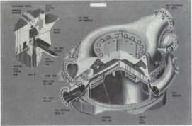
Above, a cutway drawing of the liquid oxygen dome and the injector plate of the F-l engine; below, a cutaway drawing of the Mark 10 turbopump for the F-l enigne.
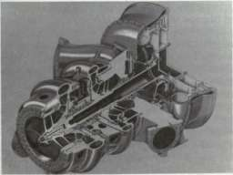
STAGES TO SATURN
convenient feature required a special heater to keep the ball bearings from freezing up when the pump was chilled by liquid oxygen prior to engine start. The oxidizer pump, rated at 102 230 liters (24 811 gallons) per minute, supplied oxidizer to the thrust chamber as well as to the gas generator. Oxygen entered the pump through an inlet connected to the oxidizer tank by a duct, and the inlet had an inducer mounted in it to increase the pressure of the oxidizer before it reached an impeller. This sequence prevented cavitation in the liquid oxygen stream. The impeller brought the oxygen to the correct pressure, then discharged it through appropriate routes to the thrust chamber and gas generator. With a rated capacity of 57 392 liters (15 741 gallons) per minute, the fuel pump supplied the thrust chamber and gas generator in the same manner as the oxidizer pump. The fuel pump system also employed an inducer section to prevent cavitation before the fuel reached the impeller.
The turbine to drive the separate propellant pumps was an impressive piece of machinery itself—it developed 410 000 watts (55 000 brake horsepower). Designers located the turbine on the fuel-pump end of the turbopump. In this position, the units of the turbopump with the most extreme temperature differences (816°C [1500°F] for the turbine and — 184°C [—300°F] for the oxidizer pump) were separated. Hot gases for the turbopump turbine originated in the gas generator and entered the turbine at 77 kilograms per second. 47 A series of failures, 11 in all, dogged the development of the turbopumps for the F-l engine. Two incidents were traced to structural failures of the LOX pump impeller, which called for redesign of the unit with increased strength. Explosions occurred in the other nine instances, with five during engine tests and four during component tests of the turbopump. The explosions developed from a variety of causes, such as shock loads due to high acceleration of the turbopump shaft, rubbing between critical seals and other moving parts, fatigue in the impeller section, and other problems. With some new design work and manufacturing techniques, these conditions disappeared, and investigators proceeded to cope with other problems that continued to crop up, such as the engine turbine. For the engine turbine manifold, Rocketdyne chose a new material known as Rene 41. This material was quite new to the manufacturers of rocket engines, and the welding process produced cracks adjacent to the weld in the heat-affected zone created by the welding pass. As a result, the company devoted considerable time and effort to ascertaining proper welding conditions and to training welders on the production lines. With the proper welding requirements finally established, Rocketdyne adopted an automatic welding procedure to complete the "fix" on this situation. 48
The turbopump was a good example of the emphasis on simplicity and reliability in design philosophy. "The primary consideration in the selection of the turbopump design," MSFC managers emphasized, "was to attain reliability by using a minimum number of parts and proven
CONVENTIONAL CRYOGENICS: H-l AND F-l
design concepts." Engineers were anxious to have a turbopump capable of operating at low inlet pressures, both to simplify design requirements and to have low pressure in the propellant tankage. The packaging concept of the F-l influenced the design of the turbopump system. The main objectives in the engine configuration included designing components to be as small as possible and keeping machinery as accessible as possible. In general, the configuration of the engine package followed the pattern of the Atlas sustainer engine (the S-4), Rocketdyne's first large liquid-propellant gimbaled engine with the turbopump mounted directly on the thrust chamber. Designers located all other associated equipment on the turbopump, thrust chamber, or somewhere in between. The attraction of this approach, as in the H-l, lay in the ability to avoid flexing the high-pressure propellant ducts in concert with the gimbaling engines during a launch.
The F-l turbopump assembly featured a variety of manufacturing techniques, heat treatment, and other processes to impart the most desirable properties to the high-performance engines. A good example of evolutionary steps in the process of engine development, these aspects of the F-l fabrication grew out of the special materials programs associated with the H-l engine. In both cases, designers selected materials intended to provide extra margins of safety whenever possible. For the pump's inlets, volutes, and impellers, the F-l incorporated a lightweight, but sturdy, aluminum-alloy casting. For turbine wheels and manifold assemblies that performed under higher operating temperatures, designers favored a nickel alloy with high strength at high temperatures. After running hundreds of tests on final designs of the F-l turbopump assembly, its developers were at last satisfied with the performance of the materials chosen and the design philosophies that were used. 49
THE F-l THRUST CHAMBER AND FURNACE BRAZING
At a rate of three metric tons per second (one metric ton of RP-1 fuel and two metric tons of liquid oxygen), the F-l was designed to burn its propellants at approximately 79 000 newtons per square centimeter (1150 pounds per square inch) at the injector face (the high pressure was emphasized as a matter of efficient design), and within the thrust chamber convert this furious activity into a high-temperature, high-velocity gas with a yield of 4.5 million newtons (1.5 million pounds) of thrust.
Before entering the thrust chamber body tubes, RP-1 entered the fuel manifold from two diametrically opposed inlets. The bypass (which channeled about 30 percent of the fuel flow directly to the injector) reduced the power requirement for the fuel pumps—they did not have to force all the fuel down the cooling tubes and up again to the
STAGES TO SATURN
combustion chamber. The remainder of the RP-1 was diverted down through 89 tubes to the nozzle exit, where a return manifold directed fuel back through the 89 return tubes. In the lower sections, the tubes were actually bifurcated units. From the fuel mainfold down to the point where the engine attained a 3.1 expansion ratio, the tubes were installed as single pieces. Below that point, the manufacturing process included two secondary fuel tubes, each spliced into the primary carrier. Designers went to this configuration to compensate for the increasing flare of the bell-shaped nozzle. The bifurcated units in the flaring nozzle permitted the engine to retain a desirable cross-sectional area in each tube and still achieve the wide, flared bell shape. 50
Transforming the thrust chamber's individual tubes into a vessel capable of handling the F-l pressure and heat required specialized metallurgical research in Rocketdyne laboratories and at MSFC. To form the regeneratively cooled engine, the F-l was fabricated as "a tube bundle surrounded by a heavily jacketed combustion chamber, a series of bands around the nozzle, and two end rings." The basic thrust chamber included 178 primary tubes and 356 secondaries, requiring 900 meters of brazed joints between them to keep the combustion gases contained within the thrust chamber. Rocketdyne personnel expended a great deal of effort on the perfection of brazing operations required for the nickel-alloy thrust chamber assembly; it was a major challenge to perfect an alloy and a brazing technique to seal the hundreds of tubes together in a bond that would withstand high temperatures and pressures. The joints carried some of the stresses created by the expanding combustion gases, but the jacket and reinforcement bands around the tube bundle carried the primary load. This basic F-l design reflected the features of other regeneratively cooled engines with tubular walls, such as the Atlas and H-l engines. The greatly increased operational factors of the F-l required more sophisticated fabrication methods, which led the company, finally, into the design and construction of the largest brazing furnace of its type in the world.
In the production of less powerful liquid-rocket tubular-walled thrust chambers, usually of pure nickel, manufacturing engineers depended on manual torch brazing with alloys of a silver-based type. With the F-l's thrust levels up to 10 times those of prior engines, investigators knew that the old procedures needed some rethinking if the big new engine was going to hold together during a launch. For the tubes themselves, the nickel-alloy Inconel X-750 provided the high strength-to-weight ratio that was needed, but it imposed certain restraints in the brazing process. After experimentation, designers realized that technical reasons prohibited the conventional technique of torch brazing, and dictated a furnace brazing process. Then a secondary set of problems cropped up. Inconel X-750 included enough aluminum and titanium to form refractory oxides under brazing temperatures, so that "the surface of the Inconel is
CONVENTIONAL CRYOGENICS: H-l AND F-l
not readily wet by most brazing alloys at elevated temperatures." Thus the brazing procedures had to begin by electrolytically depositing a thin layer of pure nickel on the tubes to eliminate the refractory oxides on the brazing surface. Despite this minor drawback in the operation, furnace brazing promised several distinct advantages over the torch method by minimizing differences in thermal stresses, combining age-hardening of the tubes with the brazing operation, and eliminating the variables of hand rnethods. 51
With the furnace activated in 1965, furnace brazing for F-l production proceeded in several carefully regulated sequences. After preliminary brazing operations to unite the thrust chamber tubes and other components, the scene was set for the final furnace brazing cycles to create a properly sealed thrust chamber. Inside a "clean-room" area, workers assembled the complete thrust chamber, using a special fixture devised by Rocketdyne to ensure proper alignment of the tube bundle, jacket, and end rings. In addition to the 900 meters of tube-to-tube alloy joints to be sealed inside and outside, the exterior required some 7000 tube-to-band joints to be brazed. The brazing alloy, in a powder form, was applied by workers using hand-held spray guns, an application technique also especially developed by Rocketdyne.
Despite the highly refined and closely monitored steps leading up to the first major furnace brazing operation, this operation remained heavily laden with drama since it could almost as easily go sour as succeed. As one Rocketdyne engineer emphasized, "The furnace brazing operation represents a final step in which all the material, time, and resources expended in the fabrication of hundreds of thrust chamber parts and subassemblies are committed. In many respects it is similar to the launch of the vehicle itself, since failure of any one of the numerous controls exercised during the furnace brazing operation could result in a poorly brazed, unacceptable piece of hardware." No wonder, then, that Rocketdyne expended so much attention on the furnace, which incorporated several unique features of design and performance. 52
OTHER COMPONENTS AND SUBSYSTEMS
The F-l design included a thrust chamber extension, or "nozzle skirt." As engineers pondered the design of the F-l and the problem of disposing of the turbine exhaust, the idea of the nozzle skirt promised several design advantages. A circumferential exhaust manifold collected the turbine exhaust gases and directed them through the nozzle skirt into the engine's exhaust plume. The skirt was designed with double walls, and numerous slots in the wall allowed the gases to exit with the jet stream of the exhaust. The effect was to introduce a cooler boundary layer to protect the walls of the thrust chamber extension. With the
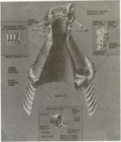
Above, a cutaway drawing of the F-l thrust chamber; right, the hugh furnace at Rocket-dyne in which the tricky brazing operation was performed on F-l engine thrust chambers at 1260°C.
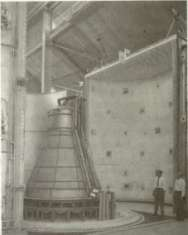
disposal of the turbine exhaust gases into the thrust chamber by way of the nozzle extension, Rocketdyne designers realized the advantages of a neat, comparatively lightweight system. There was no need for extra attachments such as a turbine exhaust duct, and the extension favorably increased the expansion ratio. Designed with simple bolted attachments, the extension could be conveniently removed for shipping and handling of engines and stage. The simplicity of the design allowed the engine to be easily test-fired following reattachment of the nozzle skirt at the test site.
To help keep the S-IC propellant tanks under pressure, the engine contractor supplied elements of the propellant tank pressurization system. The key to the system was the heat exchanger, which heated gaseous oxygen and helium to pressurize the oxidizer tank and fuel tank, respectively. Using the vehicle's own oxidizer as part of the propellant tank pressurization system illustrated harmoniously integrated design of many of the rocket systems and subsystems. Another good example involved the use of the fuel as the fluid medium in the hydraulic control system. The hydraulic design itself constituted a notable design advancement for an engine the size of the F-l. The system cut out many sets of
CONVENTIONAL CRYOGENICS: H-l AND F-l
previously required pneumatic controls and electrical components and automatically increased reliability. Once the fuel used as the hydraulic fluid had performed its programmed chores in engine components, a myriad of tubing routed it back to the turbopump fuel inlet for combustion in the thrust chamber.
The frustrations of perfecting an engine the size of the F-l ran the gamut from internal hardware to external accessories. The high operating temperatures of the engine called for varied insulation at many points, and the super-hot blasts from the clustered engines created the need for special insulation to protect the engines from their own exhaust. During the vehicle's ascent, the plumes from the five F-l engines expanded with decreasing ambient pressure until they become one searing, gargantuan sheet of flame, and a backlash stream of hot gases played over all the exterior surfaces of the engines. For this reason, designers had to protect the engines from thermal attack during the flight, as well as consider the high heat radiation encountered as the engines built up to mainstage thrust levels at liftoff. Thus, the F-l engine acquired its distinctive external insulation "cocoon," molded into segments and attached to the engine with brackets. Despite its deceptively simple appearance, the development of this insulation cocoon also experienced its share of problems in attachment and weight.
Engineers employed a direct and brutal method to test the engine insulation cocoon installed on the F-l. Workers placed an engine, enclosed in its protective wraps, inside a special wind tunnel. At one end, they installed a J-57 jet engine, complete with an afterburner, and positioned it to aim the devastating jet exhaust directly at the insulated F-l. With added quilting, thicker inner skin, and improvements in stressed areas, the engine insulation received qualification for flight. Only one more hitch occurred. In the humid, semitropical environment of Cape Kennedy, the internal quilting acted like a sponge and became thoroughly saturated during a stiff thundershower. While a Saturn V waited on the pad, engineers ran frantic tests with water-soaked insulation panels under simulated flight conditions. These tests introduced the final modifications to the insulated cocoons—strategically placed vents to let off steam from the moisture-laden internal quilting. 53
FROM STATIC TEST THROUGH FLIGHT TEST
From the beginning, the most complete facilities for full-scale F-l testing existed at Edwards Air Force Base, where Air Force work on the engine first began. Their facilities included several engine test stands and a thrust chamber stand, also used for injector design studies. The first engine tests using prototype hardware occurred in the test stand originally built for the Atlas program and converted to take the larger F-l
STAGES TO SATURN
dimensions. Researchers scheduled advanced engine work to use a new stand, capable of holding a pair of engines side by side. It was a towering complex, equivalent to an 11-story building, built with heavily reinforced concrete base and a steel girder framework anchored deeply in the desert granite to withstand the punishment of the F-l engines at full throttle. At the peak of the development program, Rocketdyne used five separate engine stands at the Rocket Engine Test Site, an integral unit of the Edwards Air Force Base complex. The equipment at the Edwards Rocket Engine Test Site also included a component test stand, a dual-position facility used for chamber and injector work at full thrust levels. Technicians began some of the first preliminary design work on this stand, even though it was not feasible at the time to build supply tanks to deliver propellants for more than a 20-second run. Despite the short duration of the experiments, the 20 seconds of roaring engine operation called for some equipment of remarkable proportions. Workmen put together the high-pressure propellant tanks with stainless steel plates 13 centimeters thick and installed fuel and oxidizer control valves that weighed 6 metric tons each. With such a complement of metal, the "battleship test" stand was aptly named. 54
To accelerate the test schedules for production models of the F-1, executives at MSFC decided to test the engines in Huntsville and ordered appropriate modifications to the west side of MSFC's static test tov/er. Thus, while the engine test stands at Edwards supported ongoing research and development, Marshall personnel checked out the first batch of production engines during 1963, sending the F-l's thundering roar through the Tennessee River valley. The tempo of F-l engine tests picked up during 1964, as MSFC personnel ran numerous static tests in Huntsville, and Rocketdyne supervised continuing work at Edwards Air Force Base. In October, the new dual-position test stand at Edwards became operational. The Director of MSFC, Wernher von Braun, flew out to California for the ceremonies, where he accepted the newly activated stand on behalf of NASA and then assigned operational responsibility to Rocketdyne. With all test stands utilized at full capacity, the Flight Rating Tests of the F-l propulsion system soon concluded, and flight qualification was verified by NASA spokesman by the last month of the year. The concurrent lines of development of stages and engines now began to converge in Huntsville where a "live" test stage (the S-IC-T), with a full complement of five F-l engines, awaited its first dramatic test firing. The use of MSFC facilities on 16 April 1965 put this phase of testing two months ahead of schedule, and the 6.5-second ignition of the S-IC-T stage generated 33 000 000 newtons (7 500 000 pounds) of thrust, more collective rocket power than ever before achieved.
During 1966, the last year before the F-l and J-2 powered Saturn V was scheduled for its first unmanned launch, the F-l passed NASA's first article configuration inspection, the first major Apollo-Saturn propulsion

The F-l test stand in the Mohave Desert towered 76 meters (note man at base).
system to pass this exam, and on 6 September the F-l received complete qualification for manned missions. The final tests for MSFC occurred on 15 November, with the acceptance firing of the S-IC-3 first stage; subsequent acceptance firings were earmarked for the Mississippi Test Facility near the Gulf, a more convenient location in terms of logistics between the test site and launch facilities at KSC. Before the epochal voyage of Apollo 11 began on 16 July 1969, five Saturn V launch vehicles lifted off from Cape Kennedy: one in 1967; two in 1968; and two more in early 1969. Despite the thousands of metric tons of cryogenic materials already consumed in research and in the hundreds upon hundreds of tests already accomplished, the pace of research involving the F-l only seemed to quicken in the concluding months before Apollo 11 began its flight. Dozens of additional tests of the complete engine were run at Huntsville and at Edwards, as contractors and NASA engineers determinedly verified the maturity and reliability of the mammoth rocket engine. 55
SUMMARY: H-l AND F-l
The H-l and F-l engines, as well as other engines in the Saturn series of vehicles, achieved remarkable records in operational reliability and longevity during the Apollo program. Both the H-l and F-l demonstrated consistent performance characteristics during flight missions, a credit to all the government and contractor personnel who
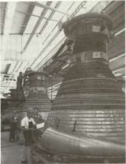
The production line for F-I engine thrust chambers at Rocketdyne.
contributed to their success. When the Saturn V took the central role in the late 1960s and early 1970s, the remaining nine Saturn S-IB first stages, along with their 72 H-l engines, went into storage. When they were earmarked for use in the Skylab program, many people wondered if such old equipment would still be reliable.
In the spring of 1971, nine years after the delivery of the last production unit, technicians pulled one of the H-l engines out of hibernation, to test the "certified lifetime" of seals, gaskets, and other components. The test was important, not only for the immediate purpose of Skylab, but to know how other liquid-fueled rocket engines stored away for future missions were faring. After an extensive pretest examination, the H-l was installed in a test stand at MSFC. Engineers put the engine through its paces: three separate starts, followed by a full-duration run of 140 seconds. The engine performed as well as at its qualification test firing, 108 months earlier. MSFC personnel tore the engine down after firing to see if they could discover any weaknesses, but all the seals and other critical parts were still in good shape and fully serviceable. Marshall officials sent the engine back into storage, satisfied that they could all be called upon to serve any time within yet another 8-10 years. A year later, during June 1972, Rocketdyne personnel did similar tests on an F-l engine that had been delivered to MSFC in 1965, tested in 1966, and put into storage. The engine was run through two extended duration firings at Edwards Air Force Base, then subjected to rigorous inspection and analysis. The engine showed no abnormalities. 56 Faith in the engines' lifetime was justified by the successful launch of the Orbital
CONVENTIONAL CRYOGENICS: H-l AND F-l
Workshop aboard a two-stage Saturn V (S-IC first stage and S-II second stage), followed by the three successful manned launches of the Saturn IB in support of the Skylab program in 1973, followed by another Saturn IB in the Apollo-Soyuz Test Project in 1975 (see chapter 13).
To appreciate the efficiency and dependability of the H-l, the contributions of engine technology from the Thor, Jupiter, and Atlas programs must be remembered. These missile propulsion systems contributed handsomely to the H-l engine's thrust chamber, turbopump assembly, gas generator system, control valves, and other engine assemblies. But the H-l emerged from its R&D gestation period as a separate and distinct engine system. Its components had been completely repackaged for compactness and improved accessibility—the latter a special problem for the H-l, created by the first-stage "boat tail." Various components were refined and strengthened for higher pressures, temperatures, and propellant flow to achieve the higher thrust levels demanded for the Saturn missions. Altogether, the designers contrived an assembly that was smaller and lighter in comparison to its enhanced performance. 57
Although the F-l had its roots in early Air Force studies, it was a "newer" engine than the H-l. Troubles with the F-l, however, were primarily a function of proportions, not innovations. Both engines used the same liquid oxygen and RP-1 propellants, but size and performance characteristics made the F-l fundamentally different. The H-l experienced R&D problems as it was uprated in thrust. Taking proven H-l components, such as the injector, and scaling them up to F-l requirements turned out to be not only difficult but basically impossible. The job necessitated a fresh approach. Reworking the engine and the injector to cope with combustion instability entailed an R&D effort of notable scope, embracing scientific and technical specialists from MSFC and other NASA centers, the contractor, other government agencies, private industry, and universities. In addition to other F-l complications, the nature of the facilities for testing and manufacturing (furnace brazing, for example) of the F-1 also differentiated it from the smaller H-1.
The extent to which cryogenic oxidizers and fuels of the RP-1 type had been used in earlier engines made the H-l and F-l conventional propulsion systems. Other Saturn cryogenic engines used a different, more potent fuel: liquid hydrogen. As the first large rocket engines to use a cyrogenic fuel, the RL-10 and J-2 were unconventional.
Unconventional Cryogenics: RL-10 and J-2
Liquid hydrogen fuel appealed to rocket designers because of its high specific impulse, a basic measure of rocket performance. Compared to an RP-1 (kerosene) fueled engine of similar size, liquid hydrogen fuel could increase the specific impulse of an engine by 40 percent. 1
Research into, and application of, gaseous hydrogen technology waxed and waned over a period of two centuries. Hydrogen's buoyant qualities when used in balloons made it an early favorite of daring balloonists in the late 18th century, until the latent flammability of hydrogen ended too many balloon flights—and balloonists' careers—in dramatic fashion. Beginning in World War II, development of large dirigibles brought hydrogen into the limelight once again. In the 1920s and 1930s, mammoth airships bearing the flags of the United States, England, France, and Germany challenged the ocean of air. Because the United States withheld helium for strategic reasons, the great German zeppelins had to use hydrogen for buoyancy. With stringent safety precautions, the zeppelins operated with astonishing reliability and safety on intercontinental routes for some years, until the cataclysmic destruction of the Hindenburg in 1937 brought another halt in the development of hydrogen for travel. Following World War II, the public associated hydrogen with doomsday weapons, as the Cold War era culminated progressive development of nuclear arms in the hydrogen bomb, or "H-Bomb," of the 1950s. While use of hydrogen was being perfected for destructive purposes, developments in rocketry opened the way for a more benign application in NASA's space program.
Serious consideration of liquid hydrogen as a rocket fuel dated from 1903 when Tsiolkovsky, in his Treatise on Space Travel, proposed a rocket
STAGES TO SATURN
engine powered by a combination of liquid oxygen and liquid hydrogen. However, liquid hydrogen could not be obtained in quantities for extensive experimental investigations, and for many years, it remained a laboratory curiosity with a tantalizing potential. 2 Significant research and development of liquid hydrogen fuel and engines faltered in the United States until the closing months of World War II, when wartime rocket development led to consideration of succeeding generations of rocket engines and fuels.
THE LURE OF LIQUID HYDROGEN
Late in 1945, the Navy Bureau of Aeronautics inaugurated a program to investigate the potential of liquid hydrogen as a rocket propellant. During the following year, the Navy formed the Committee for Evaluating the Feasibility of Space Rocketry (CEFSR), within the naval Bureau of Aeronautics, to review the problems of fuels, engines, vehicle structures, and other ramifications of advanced rockets. Within the year, CEFSR proposed a single-stage rocket, with liquid hydrogen as propellant, to boost a satellite into orbit. It was a very advanced concept, requiring hardware well ahead of the state of the art. Members of the CEFSR dubbed their vehicle the High Altitude Test Vehicle, or HATV. The bureau then negotiated a contract for additional studies with the Jet Propulsion Laboratory (JPL) of the California Institute of Technology. Investigators at JPL confirmed the feasibility of the concept of a satellite booster fueled with liquid hydrogen. Led by Dr. Theodore von Karman, several JPL engineers, intrigued by the esoteric problems of aerodynamics and space flight, had already organized a small and highly specialized corporation, the Aerojet Engineering Corporation, which seemed ideally suited to tangle with some of the hardware problems associated with the development of liquid hydrogen propellants, engines, and related systems. Under a separate Navy contract, Aerojet took on the responsibility of setting up a plant to produce liquid hydrogen in volume, and developing test stands to try out experimental liquid hydrogen rocket engines. 3
The work at Aerojet included the design, construction, and operation of high-performance injectors and thrust chambers that operated in the range from 1780 newtons (400 pounds) of thrust to 13 350 newtons (3000 pounds) of thrust. The company also successfully tested a liquid hydrogen engine pump, a single-stage centrifugal model that performed with shaft speeds up to 35 000 revolutions per minute. In 1947, the Aerojet General Corporation announced a working 13 350-newton (3000-pound) thrust liquid hydrogen engine. The direction of the work, and the attendant requirements for cryogenic supplies and storage, led to the design, construction, and operation of a plant to produce liquid hydrogen by 1949. Investigation of cryogenic engines was also under way
UNCONVENTIONAL CRYOGENICS: RL-10 AND J-2
at Ohio State University, under the direction of Dr. Herrick L.Johnston, whose research team successfully fired a liquid-hydrogen engine of significant size in 1945. Dr. Johnston served as a consultant in the design of the California plant and contributed several technical devices used in the operational layout. The insulation procedures for this pioneering facility were also adapted from Johnston's research at Ohio State. 4
The Aerojet operation afforded invaluable experience in the production and handling of liquid hydrogen, which seemed to be less ticklish than hydrogen gas. "On the whole," some early personnel recalled, "liquid hydrogen is less hazardous than high-pressure gaseous oxygen, and it may, in fact, be regarded as a highly volatile gasoline." Much of the concern with liquid hydrogen centered on the "boil-off" rate and the problems of transfer between production lines, storage, and test sites. Designers planned the production facility to achieve a capacity of 6 kilograms of liquid hydrogen per hour, probably the largest plant of its kind in existence. Actual production from September 1948 to June 1949 totaled 336 kilograms of liquid hydrogen, including 2406 kilograms in the last four months of the production period. 5 Small by later standards, when compared to the hundreds of thousands of kilograms used in Saturn missions, this output represented a notable pioneering effort in the development of liquid hydrogen technology.
The phaseout of Aerojet's production plant and early engine work coincided with the demise of the Navy's hopes for the HATV program under the CEFSR. With cost estimates fluctuating between $8 million and $82 million, the Navy hierarchy blanched at the idea of HATV, especially because there seemed to be no immediate military application for it. Undaunted, the CEFSR group tried several routes between 1946 and 1948, including the Army and Air Force; both finally said no. Before the final curtain for the HATV project, CEFSR let a contract to North American Aviation in 1946 to do preliminary studies for a liquid hydrogen rocket engine designed for a HATV rocket 34 meters high and 5 meters in diameter. With a weight of about 46 053 kilograms, including 40 406 kilograms of propellants, the vehicle design specifications called for a propulsion system delivering up to 1 334 400 newtons (300 000 pounds) of thrust at liftoff. The HATV project never materialized as an operational system, although it served a useful function in the accumulation of basic technology that contributed to the successful Apollo-Saturn program. As one acute observer summed it up, "The Navy's HATV had laid the groundwork for the hydrogen engine, the first new advance in rocketry since the V-2." 6
ENTER THE CENTAUR
The distinction of being the first liquid hydrogen rocket system to reach development went to the Centaur, developed and managed by the
STAGES TO SATURN
Astronautics Division of General Dynamics Corporation. An important aspect of the Centaur story can be traced to the research supported by the National Advisory Committee for Aeronautics (NACA), at its Lewis Laboratory in Cleveland, Ohio.
Researchers at the Lewis facility concentrated on military piston engines during World War II, until NACA abruptly changed the direciion of the research efforts. John L. Sloop, one of the Lewis staff members during the "big switch" in the autumn of 1945, recounted the sudden reordering of priorities. "While the laboratory was thus engaged (in military piston engines), others were rapidly progressing in jet engine R&D," he recalled. "The moment of truth came to NACA in 1945 and overnight the NACA management switched the laboratory emphasis from piston engines to jet engines, and the staff was reorganized from stem to stern in the process." The changeover to jet engine, or turbine, research included one or two other esoteric areas of investigation, assigned without warning to many of the lower level supervisors and researchers who had not been informed of the impending changes. Sloop himself went home on the eve of the change, "deeply engaged in writing a report on spark plug fouling." When he reported back to work in the morning, still engrossed in dirty spark plugs, Sloop found his desk gone, himself relocated to a different building, and learned that he was forthwith involved in the problem of cooling rocket engines.
The NACA executives kept the rocket engine business cloaked in obscurity. The political climate at the time was such that "NACA leaders in Washington did not want to proclaim publicly that they were sanctioning work on guided missiles in an aeronautical laboratory, so the group was officially called the High Pressure Combustion Section." This subterfuge remained in force for four years, until Abe Silverstein took over technical management of the Lewis Laboratory in 1949. He acknowledged the significance of the work on rocketry, upgraded the then small group in rank and priority, and officially named it the Rocket Research Branch. 7
As they surveyed the past work accomplished in rocket research, the former piston-engine and spark-plug experts realized the vast amount of catching up they had ahead of them. When documents became available, the researchers read reports from wartime German work "with great interest," and the research papers of the Jet Propulsion Laboratory also became basic texts. After comparing their inexperience with the more advanced and sophisticated research elsewhere, the rocket group at Lewis made a historic decision to dig into some of the lesser known areas of liquid propellants. By this route, they plowed ahead into the comparatively uncharted seas of high-energy liquid engines—their propellants, combustion characteristics, and cooling problems. After computing theoretical performances of a number of high-energy fuels, the group's first choices narrowed down to hydrazine, diborane, and ammonia, with oxidizers like chlorine trifluoride, hydrogen peroxide, and liquid oxy-
UNCONVENTIONAL CRYOGENICS: RL-10 AND J-2
gen. In the late 1940s, the group was most attracted to the combination of liquid fluorine oxidizer and diborane as fuel. On the first hot-firing test, the engine melted. Interest in diborane fuels rapidly waned after this unsettling experience, but interest in a fluoride oxidizer continued. After several other candidate fuels were tried and set aside, fluoride and liquid hydrogen came under intensive development in the latter half of the 1950s. The Lewis group kept a file on hydrogen work, so they were aware of the Navy-JPL proposals, the Aerojet liquefaction plant and engines, and the work being done at Ohio State under Herrick Johnston. Consistent with the Lewis group's own activities in high-energy propel-lants, experimental facilities for liquid hydrogen, among others, were proposed in 1952, but the facility for extensive work in this field was not put into operation until 1956.
The group's work succeeded in technical refinements, such as simulating altitude performance techniques, and in garnering growing support from Lewis Laboratory's director, Abe Silverstein. He developed increasing enthusiasm for liquid hydrogen for applications in high-altitude aircraft, as well as high-energy rockets. Buttressed by Silverstein's endorsement, the rocket research team rapidly progressed in the design of lightweight, regeneratively cooled hydrogen engines of up to 90 000 newtons (20 000 pounds) of thrust. Much of this rapport and enthusiasm was generated during free-wheeling, after-hours bull sessions, hosted by Silverstein, which were honorifically dubbed as "design conferences." The participants unwound and exchanged ideas over beer and pretzels. From one of these diffuse sessions came an important Lewis design known as the "showerhead injector" for liquid rocket engines. 8
By the late 1950s, the rocket group at Lewis worked with both hydrogen-fluorine and hydrogen-oxygen propellants, fired in a regeneratively cooled engine. Liquid fluorine presented special problems in operations, however, and Silverstein apparently had growing doubts about it. "Later, when he witnessed a hydrogen-oxygen rocket engine operation, the sweetness of the hydrogen-oxygen combination came through to him, and to us, loud and clear," Sloop said. By this time, rocket research at the Lewis Laboratory had increased considerably. Some assignments included preparatory work on propulsion systems for satellites and missions to the moon. Looking back, Sloop and his associates took quiet pride in their contributions to liquid hydrogen engine technology. "We believe that the Lewis work on hydrogen in rocket engines, although not first, was both timely and significant," said Sloop. "We showed that lightweight, regeneratively cooled thrust chambers of 22 250 and 90 000 newtons (5000 and 20 000 pounds) of thrust could operate at very high efficiencies."
Of special significance was the relationship of the Lewis activity to the Centaur program—under the auspices of the Advanced Research Projects Agency (ARPA)—and particularly to the hydrogen engines
STAGES TO SATURN
produced by Pratt & Whitney. One of the ARPA personnel, Richard Canright, also served as a member of NACA's Special Subcommittee for Rocket Engines, and thereby became very familiar with the work at Lewis. A number of key personnel from United Aircraft and Pratt & Whitney, who also worked on hydrogen engines, paid numerous visits to Lewis to see what was going on and to talk with the rocket group there. Eventually, the Pratt & Whitney observers graciously conceded their debt to Lewis's various injector designs, as well as to crucial experimental statistics employed in the development of the XLR-15 engine (an early designation for the RL-10 engine used in the Centaur and, later, in the Saturn upper stages).
Last but not least, the Lewis experience had a definite impact on the direction of the Saturn program very early in the game. After the organization of NASA, Silverstein went to Washington to serve as Director of Space Flight Development. In anticipation of the Army's transfer of Saturn to NASA, NASA's Associate Administrator tapped Silverstein to chair a special interagency committee to consider the scope of Saturn's development, and to submit recommendations on goals and implementation, particularly the configuration of the upper stages. "With a persuasive chairman occupying a key position and sold on hydrogen-oxygen, it is not surprising that the group recommended that the upper stages of Saturn be hydrogen-oxygen," observed Sloop, somewhat sardonically. Perhaps the most notable contribution of the Lewis rocket group, he concluded, lay in its influence on the decision that shaped the design of the Saturn's upper stages. 9
CENTAUR: THE LEGACY OF A PIONEER
The ultimate goal and purpose of astronautics is to gain for man himself access to space and then to other worlds. The guided missile does not carry a man. It is a bridge between the space-flight concepts at the beginning and the space-flight reality yet to come. Achieving this reality requires yet another stepping stone: the high-energy upper stage which is boosted aloft by the missile and which, in turn, places the manned spaceship within the reach of the planet to be explored. The upper stage, a logical follow-on to the missile, now takes its place within the development chain designed at getting man to the stars. This, then is Centaur . . .
This slice of slightly overripe prose, a product of Centaur's public relations office, 10 manages to summarize some characteristic trends in America's space program. The Centaur effort, particularly the propulsion system, illustrates both the triumphs and the tribulations of liquid hydrogen technology. The effort also highlights some of the differentiations found in rocket vehicles such as the Centaur, S-IV, and S-IVB on the basis of a type of propellant system common to all three.
With Atlas operational and successful, General Dynamics/Astronautics (GD/A) began to consider its uses as a launch vehicle for space missions.
UNCONVENTIONAL CRYOGENICS: RL-10 AND J-2
By adding on a second stage, the company's planners hoped to achieve a design capable of heavier payloads than currently employed as missile warheads. Serious studies began in 1956, contemplating payloads like high-altitude satellites for early missile warning, global reconnaissance, weather scanning, and communications. Such payloads required a very-high-energy stage to boost them into orbit. The GD/A investigating team chose liquid oxygen and liquid hydrogen as propellants. 1 1 The team had looked into a number of high-energy propellant combinations, including fluorine as an oxidizer, but fluorine did not promise a significant gain in specific impulse and performance. Besides, the choice of liquid oxygen would continue the use of well grounded operational technology, and save considerable time and development efforts. When it came to the choice of fuel, the team again considered several options, but chose to rely on liquid hydrogen, because its specific impulse came closest to the upper limits that could be attained with chemical propellants. Selection of liquid hydrogen was a knowledgeable gamble: Pratt & Whitney was not a total stranger to this new area of cryogenic technology. In the mid-1950s, the Air Force had been working on experimental jet engines using LH 2 fuel, and Pratt & Whitney had been deeply involved in this research. Even though liquid hydrogen entailed problems as a jet engine fuel, many company engineers viewed hydrogen as the most promising fuel for applications in future rocket technology, either for chemical or nuclear propulsion. "Also," the company noted, "this vehicle would offer a favorable starting point for the development of this technology, because of its limited size and because none of the missions yet required very long storage periods in space, as would be the case with future hydrogen-powered vehicles." 1
In its formal proposal, GD/A outlined a program with potential for various high-altitude satellites for strategic use, adding the possibilities of deep-space probes and even manned orbital configurations. As a launch vehicle, the GD/A specifications recommended a modified Atlas ICBM first stage with conventional liquid oxygen and RP-1 propellants, and a four-engine second stage (still on the drawing boards) using oxygen-hydrogen as oxidizer and propellant. It was the proposed second stage that appealed to the USAF Air Research and Development Command, who selected it from several unsolicited proposals involving satellites for communications. On 14 November 1958, GD/A received a contract to manufacture a total of six hydrogen-oxygen upper stages for ARPA, marking the formal origins of the Centaur program. The Air Force tagged the Atlas-Centaur as its launch system for Advent, a synchronous-orbit equatorial communications satellite.
While GD/A tooled up for the fabrication of the vehicle's tanks and structure in San Diego, Pratt & Whitney started to work on the engines at its West Palm Beach facility in Florida. One of the basic problems was getting an adequate quantity of liquid hydrogen for R&D work on the
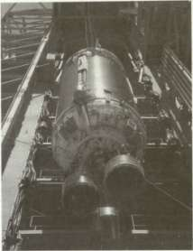
A Centaur stage with the two RL-10 liquid-hydrogen-fueled engines used on the S-IV stage of Saturn I.
propulsion systems. In conjunction with development and testing of the Pratt & Whitney engine, the USAF planned a production facility for liquid hydrogen near Pratt & Whitney's West Palm Beach location. As the program developed, and the Centaur's engines were conscripted for use in NASA's space program, engine testing also occurred at Marshall Space Flight Center (MSFC), Lewis Research Center, Edwards Air Force Base, and two other Pratt & Whitney Centaur test areas in California. The Douglas Aircraft Rocket Test area near Sacramento also test-fired the Pratt & Whitney engines on the six-engined S-IV upper stage of the Saturn I. 13
Even before the Silverstein recommendations in December 1959, the channels that brought high-energy hydrogen-oxygen engines into the Saturn program had begun to converge. At Huntsville, Alabama in the spring of 1959, preliminary upper-stage vehicle studies for the Saturn program included the Centaur as a third stage. The final recommendations of the Silverstein committee, coupled with the prior interest in the high-energy Centaur, finally locked liquid hydrogen into the Saturn's development. Oswald Lange, a key figure in the early Saturn program at MSFC, considered the Centaur's engines "a major technological breakthrough." Before the Army Ballistic Missiles Agency phased out, the ABMA Saturn project designated the Pratt & Whitney engines as the propulsion system for the Saturn's third stage. "The early choice of Centaur," said Lange, "had far-reaching effects on the Saturn development program." 14 Following the organization of the National Aeronautics and Space Administration, Centaur was assigned to the civilian space program under the aegis of NASA's MSFC. Centaur was ticketed as one
UNCONVENTIONAL CRYOGENICS: RL-10 AND J-2
of the upper stages for Surveyor and Mariner lunar and planetary missions, and MSFC began to plan Centaur's role in the development of the Saturn vehicles. MSFC's role in Centaur management was somewhat controversial. Some people at NASA Headquarters argued that the Air Force should manage the Centaur engine because of its original military mission as a communications-satellite booster. At Huntsville, the Centaur engine effort might have been submerged by the Saturn program. 15
The Saturn program's association with the development of liquid hydrogen-oxygen engines officially commenced on 10 August 1960, when MSFC signed a contract with Pratt & Whitney for the development and production of an engine, known as the LR-119, to be used in the S-IV and S-V stages of the C-l vehicle envisioned in the Silverstein report. Designed to give 66 700 newtons (17 500 pounds) of thrust, the LR-119 was an uprated version of an early Centaur engine concept, the LR-115. Problems with the development of this new version led to the reconsideration of the original Centaur propulsion system, and in March 1961, the management of MSFC recommended the design of a liquid-hydrogen S-IV stage using the original LR-115 hardware. To compensate for the loss of thrust, MSFC decided to cluster six engines instead of four. On 29 March 1961, NASA Headquarters concurred, and the new six-engine cluster became the official configuration. In the course of development, Pratt & Whitney assigned various designations to the basic liquid hydrogen-oxygen engine. The final design, RL-10-A-1, replaced both the LR-115 and 119, and the RL-10 configuration became standard for both the Centaur and S-IV vehicles by 1961. An early version of the RL-10 design went through its first successful firing in August 1959, and by the winter of 1961, technicians finished the last of the RL-10-A-1 preflight rating tests. The engine's 66 700 newtons (15 000 pounds) of thrust performed 30 percent better than similar designs using hydrocarbon fuels. The A-l designation identified a test article; on 9 June 1962, Pratt & Whitney finished the preliminary flight rating tests on the RL-10-A-3, intended for installation in operational flight versions of the second stage of the C-l launch vehicle. 16 The nation's first operational liquid hydrogen-oxygen engine was cleared for production.
THE RL-10 PROPULSION SYSTEM
Pratt & Whitney engine design unquestionably benefited from the work at Lewis during 1953—1957, especially the virtues of regenerative cooling with liquid hydrogen. 17 Pratt & Whitney added other innovative features. The Saturn program's RL-10 engines were mounted on the S-IV booster manufactured by Douglas as the second stage for the Saturn I. In physical terms, the RL-10 was about as tall as an average man. Its major components included the thrust chamber, fuel and oxidizer
STAGES TO SATURN
turbopump assembly, liquid oxygen flow control valve, spark ignition subsystem, thrust control assembly, and miscellaneous control valves.
The contours of the nozzle configuration owed much to the influence of applied mathematics. Pratt & Whitney wanted a nozzle designed for optimum size and weight in relation to performance, but liquid hydrogen technology was so new that few ground rules were available. Applied math bypassed a lot of costly hardware experimentation, and Pratt & Whitney claimed that the procedures established during the effort became widely used within the rocket propulsion industry. 18
The injector, part of the thrust chamber assembly, featured a porous injector face, which was an important innovation. The RL-10 injector strongly resembled a large dish with a shallow, concave surface. Fabricated from material that looked like a heavy screen, the injector's propellant orifices poked through the mesh in concentric rings. The porous injector face did, in fact, consist of layers of stainless steel mesh, produced by a carefully controlled sintering procedure that caused the layers of mesh to become a coherent structure without melting. A controlled flow of gaseous hydrogen filtered through, cooling the injector face and reducing thermal stresses. The material, called Rigi-Mesh by its supplier (the Pall Corporation), apparently originated as a filter used in nuclear research. The product had been extensively used in hydraulic and pneumatic filters in aircraft and jet engines, where extreme vibration environments, high temperatures, and other operational requirements discouraged the use of nonmetallic filters. How Rigi-Mesh was first suggested for use in rocket thrust chambers is unclear. In any case, the Pratt & Whitney injector approach, using the porous mesh face, was a distinct improvement over conventional, flat-face injectors that Lewis Research Center had used. 19
The fuel and oxidizer pumps were driven in a "boot strap" arrangement from a turbine assembly rated at 479 to 513 kilowatts. The propellant pumps consisted of a two-stage centrifugal fuel pump and a single-stage centrifugal oxidizer pump. General Dynamics/Astronautics described the engine's turbopump as the key to operating the RL-10 production version, in which the "boot strap" sequence used gaseous hydrogen. At the start, liquid hydrogen trickled through the turbopump and down through the thrust chamber tubes of the regeneratively cooled engine. Even before the ignition sequence and main stage operation, the flowing liquid hydrogen became gaseous, and could be forced back through the turbopump with enough pressure to start it. This pressure set the hydrogen fuel pump in motion, and a gear train from the hydrogen turbine's main shaft began to drive the liquid oxygen pump—the "boot strap" sequence. After the start of combustion, the heat produced enough gas in the chamber walls to drive the high-speed turbine and also to maintain the combustion level. 20

RLIOA-3 Propellanl Flo. Sckti.nl
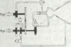
Top left, the RL-10 statistics; above, right, the RL-10 injector, with a textured surface of Rigi-mesh for transpiration cooling. At left is a schematic of RL-10 propellantflow. At bottom left is the RL-10 production line at Pratt & Whitney in Florida. Bottom right shows a Saturn I S-IV second stage with its cluster of six RL-10 engines.
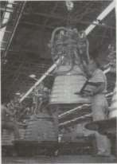
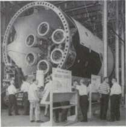
STAGES TO SATURN
This design offered two main advantages. First, the engine did not require a third propellant or a bipropellant to service a gas generator system (at a weight penalty) for the turbopump. Second, the designers obtained an efficient performance advantage because the hydrogen gases, after driving the turbine, were exhausted into the combustion chamber. All propellants, then, contributed directly to maximum thrust and highest specific impulse. The operation of the turbomachinery incorporated another interesting design feature. The RL-10 was the first production engine to use liquid hydrogen in place of conventional lubrication systems. 21
During the test program, NASA and contractor personnel pushed the design to extremes to verify the engine's capability. Designed for a total firing time of 470 seconds, test engineers piled more than 3.5 times that duration onto one engine, running it for a total of 1680 seconds. Some of the test engines successfully operated through 5 to 70 separate firings with no maintenance or replacement of parts, equivalent in some instances to 10 round trips to the moon. "This philosophy of 'limits' testing has proven successful in developing an engine with a high reliability and a high degree of confidence," explained key personnel in MSFC's engine program office. They characterized the pioneering RL-10 as a system of notable sophistication and versatility. 22
ORIGINS OF THE J-2 ENGINE
Because of the known high-energy qualities of hydrogen as a fuel, modern rocket propulsion engineers manifested a continuing interest in liquid hydrogen as an attractive rocket propellant, able to lift payloads at a very favorable fuel-to-payload ratio. The potential of the liquid hydrogen RL-10 engine was encouraging; nevertheless, designers were thinking ahead of the RL-10's 67 000 newtons (15 000 pounds) of thrust to even heftier propulsion systems. In the fall of 1959, various NASA studies and contracts already included examination of 665 000-newton (150 000-pound) thrust engines, used singly or in clusters, which burned LOX and LH 2 . When very large space vehicles came into consideration, NASA began to revise its thinking toward even larger LH 2 -fueled engines for high-energy upper stages—engines rated at 890 000 newtons (200 000 pounds) of thrust. Such a remarkable goal achieved official sanction during the deliberations of the Saturn Vehicle Team, better known as the Silverstein committee, which finished its work and reported its recommendations to NASA on 15 December 1959. 23
Following the Silverstein committee's recommendations, a source evaluation board was formed to nominate a contractor. The board included a pair of special teams—a technical evaluation team and a business evaluation team—to examine proposals on two separate levels.
UNCONVENTIONAL CRYOGENICS: RL-10 AND J-2
Members, who met in Washington for six weeks, were chosen from Marshall, Lewis, and NASA Headquarters. The full board, chaired by MSFC's Hermann Weidner (a Peenemuende veteran and a senior MSFC propulsion engineer), submitted its final recommendation to NASA Administrator Glennan for approval. Glennan made the final announcement. In competition with four other companies, Rocketdyne Division of North American Aviation won NASA's approval on 1 June 1960 to develop a high-energy rocket engine, fueled by liquid oxygen and hydrogen, to be known as the J-2. Specifications for the liquid-hydrogen engine originated at MSFC, and the contractor then went to work on the initial design concepts and hardware. At every step of the way, the contractor and the customer (MSFC) exchanged information and ideas derived from earlier programs, modifying them for the requirements of the LH 2 engine technology, and devising new techniques to implement the design goals of the new rocket powerplant.
The final contract, negotiated by Rocketdyne in September 1960, included an especially notable feature. For the first time, a high-energy, high-thrust rocket engine contract specified a design to "insure maximum safety for manned flight." Beginning with the first specifications through the subsequent stages of design, development, and final qualification, planning for manned missions became a mainline theme for Rocketdyne engineers. Other engines in NASA's space program stemmed from propulsion systems engineered for unmanned satellites or ballistic missiles such as the Vanguard, Redstone, Atlas, and Thor. From the start, exceedingly stiff reliability specifications for the J-2 reflected the engine's role in a manned mission. Reliability reviews began at the drawing board stage, and follow-up tests to verify the preceding test and design specifications continued in relentless succession. The technical management organization established to monitor the J-2 development consisted of three major groups. First, the design review board scrutinized each part of the J-2, analyzed it from a technical viewpoint, and investigated all of its design factors. Next, a reliability task force developed statistical methods tailored specifically to proposed test programs for the engine. Finally, all elements dovetailed in the Performance Evaluation and Review Technique (PERT), a reporting system used by the overall program management team. 24
EARLY J-2 MILESTONES
Rocketdyne launched the development of the J-2 with an analytical computer model that simulated engine operations and aided in establishing design configurations. One outgrowth of the model, a full-sized mockup with which to judge position of all components, remained an important tool throughout the J-2 program. 25
STAGES TO SATURN
Rocketdyne's physical plant and long experience as a rocket engine manufacturer allowed the company to respond quickly. The main complex at Canoga Park, in the northwest sector of Los Angeles, combined engineering offices with elaborate laboratories for preliminary R&D. Development and production of the F-l and the H-l (and its immediate predecessor, the S-3D), coupled with extensive experimental work on advanced propulsion systems, equipped the company with excellent facilities and experienced R&D teams. Rocketdyne carried out J-2 firing tests and major-component tests at its Santa Susanna Field Laboratory, a rambling network of test stands and test cells set up in canyons and arroyos of the Santa Susanna Mountains, directly above the manufacturing area at Canoga Park. In days gone by, the canyon walls and gulches echoed with the drumbeat hooves of galloping horses and the sharp crackle of gunfire as Hollywood production crews cranked out yet another Western epic. Now the arroyo walls enveloped test beds for rocket engines, the steep slopes shielding the rest of the test areas and their crews in case something went wrong and an engine blew up. A visit to the surrealistic environs of Santa Susanna made a lasting impression. It was a tortured, sun-baked tumble of rocks and scraggly underbrush, with the separate test areas connected by long runs of piping for water and miscellaneous esoteric liquids required in rocket development. The pipes erratically twisted their way over the boulder-strewn landscape and up to the test fixtures—austere monoliths of concrete and stark steel girders jutting into the hot California sky. It seemed a fitting environment for the exotic world of rocket engine testing. 26
Within two months of winning its contract, an R&D team put together the J-2's first experimental component, a full-scale injector. Using a temporary test facility at Santa Susana, Rocketdyne technicians conducted the first hot-firing tests on 11 November 1960, to check out the workability of its design. In simultaneous programs, the company began developing means to test engines as well as engine components, modifying test stands as required. A large vacuum chamber to test engine subsystems under simulated space conditions was completed. By the end of 1960, the manufacturing planners, with an eye on problems encountered during the early design and phase, began to try to resolve some of the sticky manufacturing problems looming on the horizon. The schedule was obviously getting tighter as the research and development teams began the fabrication and assembly of the first experimental components and emplaced them in the test cells. Inaugurating Rocketdyne's first test facility built exclusively for the J-2 program, workers activated a component test cell in November 1961, and engineers began trial runs of the J-2 liquid hydrogen and liquid oxygen turbopumps. Early in 1962, only 18
UNCONVENTIONAL CRYOGENICS: RL-10 AND J-2
months after contract award, Rocketdyne conducted the first engine system test for ignition, lasting 2.57 seconds. The test unit used an uncooled thrust chamber with the turbopumps driven by externally supplied gaseous hydrogen, instead of using the engine's internal gas generator.
Drawing further on its considerable fund of experience in developing rocket engines for Army and Air Force programs, Rocketdyne personnel fabricated additional test components of the new J-2 in remarkably short order, and began to piece together the first experimental engine in the closing months of 1961. Technicians made final checks on the engine in the company's Canoga Park complex during January 1962 and stowed it on a truck, to be driven up the winding mountain to the Santa Susanna Field Laboratory. Short-run tests began the same month and continued through the summer. Technicians were achieving full-thrust testing of 50 to 94 seconds duration by early autumn, and on 4 October 1962, Rocketdyne successfully ran the engine through a long-duration test of 250 seconds. 27
During the early developmental period in J-2 testing, the engine's place in Saturn rocket configurations also stabilized. In July 1962, NASA and Rocketdyne concluded contracts for continued development and formalized the production agreements for the J-2 through 1965. About the same time, NASA announced plans for a new two-stage vehicle, the Saturn C-1B (later the IB) for operations leading to Earth-orbital missions with a full-sized Apollo spacecraft. 28 The J-2 engine was intended to power the S-IVB stage of two Saturn vehicles—the second stage of the Saturn IB and the third stage of the Saturn V. In addition, a cluster of five J-2 engines was also planned for the S-II second stage of the three-stage Saturn V vehicle, making the J-2 the most used cryogenic propulsion system in the Saturn program.
NASA and Rocketdyne signed a contract for 55 engines and development of appropriate support technology on 1 July 1962. Later in the month, Rocketdyne announced its plans for the construction of two new manufacturing buildings for the Saturn engines, including the J-2. The buildings were completed in record time; the company moved in just a year later. In November 1963, Rocketdyne began delivery of five engine simulators. Up to the point of actual firing, the simulators played an important role in the process of electrical and mechanical design of the ground support equipment furnished by Rocketdyne, and permitted technicians to work out the interfacing details involved in mounting the engine to the appropriate stage—the S-II stage manufactured by North American, or the S-IVB stage manufactured by Douglas. Ground support equipment, operating consoles, and special handling gear for the
STAGES TO SATURN
engines and propellants were used in Rocketdyne's own manufacturing and test operations in California, at other test sites (Marshall and Mississippi Test Facility), and in launch operations at Cape Kennedy. 29
THE J-2: LEGACIES AND INNOVATIONS
Confident with the test results during 1962, Rocketdyne began to release the first production drawings to the manufacturing shops early in 1963. The J-2 engine emerged from the drafting boards as a self-contained propulsion system—a significant concept because the J-2 had to start in flight, shut itself down, then (in some versions) restart in orbit. Explaining the engine at a meeting of the American Institute of Aeronautics and Astronautics, Paul Fuller (Rocketdyne's project manager for the J-2 in 1965) stressed the effort given to the self-contained design philosophy. "The J-2 engine is not just a rocket engine supplying thrust for the vehicle, but is a fully integrated propulsion system," Fuller emphasized. "The engine provides all functions important to the vehicle's operation and mission capability." For this reason, engine and stage operation systems were closely integrated. To maintain tank pressure and still control the weight of the vehicles, the S-IV and S-IVB pressurized their fuel tanks by tapping hydrogen gas from the fuel manifold on the thrust chamber. To keep up pressure in the LOX tank, designers included a heat exchanger on the oxygen pump exhaust duct. In the S-II second stage, hot oxygen from the exchanger served as the pressurant, while in the S-IVB, stored helium ran through the exchanger and back into the LOX tank. These systems eliminated the need for other pressurants along with their extra weight and complexity.
The S-IVB, with a programmed restart in Earth orbit, included a "self-servicing" concept for the reignition sequence. The helium tanks included enough gas for the duration of the mission, but to get enough hydrogen gas to accelerate turbomachinery for the restart cycle, the engine system automatically diverted 1 kilogram of LH 2 from the fuel system for storage in the depleted hydrogen start tank.To ensure proper functioning of the entire system during a mission, the engine's designers included integral instrumentation on the J-2 to monitor engine functions on 72 different channels. 30
For the integrated engine system philosophy, designers of the J-2 borrowed from many earlier liquid propellant engines, including the liquid hydrogen technology of the RL-10 program, and added a few innovations along the way. In the process, technicians and manufacturing engineers learned to cope with the problems generated by the J-2 as a newer and much larger generation of liquid-hydrogen engine systems.
Like the RL-10, the J-2 injector had to promote stable, controlled burning. But the 890 000-newton (200 000-pound) thrust J-2 burned
UNCONVENTIONAL CRYOGENICS: RL-10 AND J-2
much greater quantities of cryogenic propellants than the 67 000-newton (15 000-pound) thrust RL-10. When Rocketdyne started work on the injector in 1960, the company tried a design familiar to its engineers, and built flat-faced copper injectors similar to LOX-RP-1 designs. The heat fluxes of LOX-LH 2 designs turned out to be much different at the injector face, and the injectors started burning out. Bob Pease, an MSFC propulsion engineer who monitored some of the early tests, recalled that green flames shot out of one injector as the flame front started burning its way through the copper.
As one Marshall engineer observed, it was the general nature of a contractor to be reluctant to take on a competitor's innovation. Rocketdyne's injectors kept burning out, but the company seemed adamant against incorporating the porous injector face style of Pratt & Whitney's RL-10. Rocketdyne had been experimenting with this type of injector at NASA's insistence, and Marshall began to feel that their J-2 contractor needed a shove in this direction, instead of the persistent nudges delivered by MSFC up to this point. Lewis Research Center had all the information and hardware samples for the porous injector face. Jerry Thomson and other Marshall engineers dragooned Rocketdyne personnel into a special trip to Lewis in 1962 to look at the samples, and pressured Rocketdyne to use Rigi-Mesh in the injector face. With Rigi-Mesh adapted to the J-2, the problems of injector face burning disappeared. 31
Still, Rocketdyne's larger engine and its operational characteristics presented difficulties in manufacturing. The successful design led to the next set of problems: how to "mass produce" a rocket engine injector with more than 600 uniform injection posts. After some trial and error, manufacturing engineers finally evolved a method of producing an injector with 614 uniform posts from a single piece of metal, using a special technique of electrical discharge machining. Fuel from the upper fuel manifold flowed into the combustion area through fuel orifices designed to be concentric with the oxidizer orifices. Design of the injector and angles of the orifices was calculated for highest combustion efficiency. As the hydrogen passed through the injector to the annular orifices, 5 percent of the flow seeped through the porous injector face, acting as a coolant to reduce thermal stresses created by the roaring combustion chamber. 32
The J-2's thrust chamber consisted of several hundred steel tubes, designed and shaped according to data derived by computer. The computer helped solve the frustrating interplay of "the general energy equation, momentum equation, continuity equation, equation of state, and heat balance equation across tube walls." The readout of the computer proved to be very accurate, the final design of a tapered, formed tube bearing very close conformance with the original analytical model. Designers made optimum use of the marvelous facility of LH 2 for heat transfer in designing the thrust chamber. Fuel entered the chamber
STAGES TO SATURN
through a manifold at the chamber's midpoint, making a one-half pass down through 180 tubes on the outside, then up the inside of the chamber's throat in a complete pass through 360 tubes to the fuel injector. The liquid hydrogen entered the tubes at -253°C (-423°F) and warmed up in passage to "only" -162°C (-260°F), at which point it became gaseous. The design of the tubes permitted extremely wide variations in LH 2 velocities, ranging from 18 meters per second at the bottom of the pass at the chamber's edge to 300 meters per second at the throat, and 240 meters per second at the injector entry ports. At different points within the tubes, cross sections varied correspondingly to accommodate changes in density and flow rates. 33 With so many variables in the design, it is no wonder that the computer played such a pivotal role in engine development.
Turbopump design borrowed liberally from North American's experience in manufacturing jet aircraft engines and the early rocket engines for the Air Force. As in jet engines, the turbopump turbine blades featured a "fir tree" attachment technique. The bases of the blades were tapered and notched, giving them the silhouette of an inverted fir tree. Centrifugal forces in the turbopumps were terrifically high, and the notched blades kept them securely in place. From the Atlas program, Rocketdyne borrowed turbopump inducer designs and the inducer tunnel assembly, but many, many more components had to be conceived and fabricated to the characteristics of the new LOX-LH 2 technology.
In designing the J-2 turbopumps to deliver propellants to the injector and the combustion chamber, the system was split into two different components, the LOX pump and LH 2 pump mounted separately on either side of the combustion chamber. This approach avoided compromises in the efficiency of either pump and eliminated a complicated set of gears to run both pumps from a single shaft. On the LOX side, the J-2 used a radial pump, common to most rocket engines, which operated in the 6000 revolutions per minute range. The LH 2 pump, by contrast, used a pump uncommon in large thrust engines, at the time—a seven-stage axial flow design with an operating capability of over 25 000 revolutions per minute. With proper calibration, the pumps delivered propellants to the thrust chamber at a rate of 2.3 kilograms of liquid oxygen to 0.4 kilogram of hydrogen. 34
Power for the turbopumps came from a two-stage, velocity-compound turbine fired by a gas generator. The original design for the J-2 engine envisioned a "tank-head" start, in which pressure from the fuel tanks started the gas generator. Once in operation, the feed pressures and power increased as the turbopump attained its operational limits, drawing propellants from the tanks. The "tank-head" start was attractively simple but turned out to be too slow to be used in flight operations for the Saturn. So the turbine power system acquired augmentation for the spinup of the gas generator, using a spherical tank to store compressed
UNCONVENTIONAL CRYOGENICS: RL-10 AND J-2
hydrogen gas with a storage capacity of 0.1 cubic meter. Gas from the hydrogen sphere started the gas generator and achieved rapid acceleration and operation from the start. This "gas-spin" start could be initiated at will during the flight, important for reignition of the S-IVB stage in Earth parking orbit. The only requirement involved a brief cycle during the engine run, in which hydrogen gas was tapped to recharge the hydrogen sphere. 35 The design of the hydrogen storage tank constituted a unique feature of the J-2 engine: it incorporated a "tank within a tank," combining hydrogen storage with a helium storage tank. The helium, required for the pneumatic control system, tended to vent off unless kept under pressure at a low temperature. In a neat solution to the problem, Rocketdyne designed the helium storage tank as an integral unit inside the hydrogen start tank, and thereby saved space as well as weight. Both tanks were filled on the ground prior to launch—the outside tank with hydrogen, the inner tank with helium. 36
The l'/2-pass fuel circuit permitted another design variation, in the disposal of the exhaust gas from the turbopumps. The gas delivered from the gas generator to the propellant turbopumps passed in sequence through the hydrogen axial flow turbines, then through a duct into the radial turbine of the LOX pump. The series arrangement yielded a very high efficiency and permitted easy control of the thrust and mixture ratios. Having already performed double duty in both the fuel and oxidizer turbopumps, the turbine gas exhausted into the thrust chamber to be used as fuel. In this way, the engine handled the turbine exhaust very conveniently and enhanced the engine's specific impulse at the same time. 37
The high speeds at which the J-2's moving parts functioned required some special lubricants, which were acquired from the propellants themselves. Ball bearings in the turbopumps present special problems in lubrication—particularly the super-cold LH 2 pumps.Normal lubricating oils proved troublesome because of the extremely low temperatures of cryogenic operation, so Rocketdyne built the LOX and LH 2 turbopumps to have their ball bearings lubricated by the respective propellants. At Ohio State University, Herrick Johnston first demonstrated the potential of LH 2 lubricants. The use of cryogenic lubricants in the RL-10 paved the way for this lubrication in the J-2. 38
PRODUCTION AND TESTING
In May 1963, production lines for the operational model of the J-2 went into full swing, but concurrent testing programs at Rocketdyne and at MSFC were also maintained throughout the production run. Engineers from both the contractor and the customer were on hand when Douglas began firing up S-IVB stage hardware. The first production
STAGES TO SATURN
engine, delivered in April 1964, went to Douglas for static tests on the S-IVB. battleship stage at the Douglas test facility near Sacramento, California.
The first full-duration static test of 410 seconds occurred on the battleship stand late in December. The mission requirements of the third stage for the Saturn V called for an application of 500 seconds, but each engine possessed a minimum usable life of 3750 seconds. Even so, the testing program often forced the engines beyond this. L. F. Belew, MSFC engine program manager, characterized the philosophy of "limit testing" as a combination of requirements for manned flight and cost control. "A major emphasis is placed on limits testing as a means of demonstrating reliability and confidence without a prohibitively large test sample," he explained. 39
Intensive engine testing, including tests on MSFC's new S-IVB test stand in Huntsville, and flight rating tests of the 890 000-newton (200 000-pound) thrust engine for the Saturn IB and Saturn V at Santa Susanna Field Laboratory, continued throughout the summer of 1965. The last of the stringent qualification tests of the J-2 engine occurred from December 1965 into January 1966, conforming very closely to Belew's estimate. The J-2 proved its ability to perform well over its specified operational range. One engine ignited successfully in 30 successive firings, including five tests at full duration of 470 seconds each. The total firing time of 3774 seconds represented a level of accumulated operational time almost eight times greater than the flight requirements. As successful single engine tests moved toward their climax, integration tests of the propulsion system with the S-IVB accelerated with the availability of more production engines. Time schedules for testing the flight stages of the S-IVB became ever more pressing. The first operational flight, AS-201, was scheduled in early 1966 for the Saturn IB using the S-IB first stage and the S-IVB as the second stage.
At Sacramento, the first tests of S-IVB-201 in July 1966 were inconclusive when a component malfunction in one of the pneumatic consoles prematurely ended the test after a successful propellant loading and automatic countdown. Test conductors regained confidence on 8 August, when the S-IVB-201 performed beautifully on a full-duration firing of 452 seconds. The test commanded extra attention because of the first use of computers to control the entire operational sequence, including automatic checkout, propellant loading, and static firing. 40 The successful test was no fluke. On 26 February 1966, AS-201 went through a flawless launch.
In July 1966, NASA confirmed J-2 production contracts through 1968, by which time Rocketdyne agreed to finish deliveries of 155 J-2 engines. The new contract included an uprated model of the J-2 engine with a thrust of 1 023 000 newtons (230 000 pounds). Rocketdyne began work on the uprated version in 1965 and delivered the first engine to
UNCONVENTIONAL CRYOGENICS: RL-10 AND J-2
MSFC for testing during the spring of 1966. Mission planners intended to use the new engine in the second stage of the Saturn IB beginning with AS-208, as well as the second and third stages of the Saturn V beginning with AS-504. Meanwhile, an intensive test program continued. Following a preliminary series of simulated altitude tests using Rocketdyne facilities, a more stringent series of tests was conducted using the advanced equipment of the Arnold Engineering Development Center. The center was run by the Air Force at Tullahoma, Tennessee, not far from MSFC. Specialists at Arnold ran a series of altitude tests on J-2 engines for the S-IVB/IB stage and followed up with an equally successful test series on engines for the S-IVB/V in March 1967. Using facilities that duplicated temperatures and environmental conditions at 305 000 meters, Arnold cooperated with NASA on a string of initial start, stop, and the crucial reignition sequences. Throughout the year, Rocketdyne continued to test and verify the J-2 reliability at Santa Susanna. The company's research and development program included 203 separate tests on the J-2, accumulating a total of 33 579 seconds of firing time. In a concurrent program, production engines from the assembly lines in the valley kept rolling up the mountainside in trucks for their production qualification tests. 41
J-2 PROBLEMS AND SOLUTIONS
Development of the J-2 engine turned up the inevitable gaggle of problems to perplex project designers, engineers, and workers. In using cryogenic propellants, it was obvious that great care was needed to ensure installation of very efficient insulation at critical points to control thermal losses. In the case of most early rocket technology using LOX as the oxidizer, the problem was not immediate. Designers simply took advantage of the fact that LOX components had a tendency to frost over. The frosty coating worked surprisingly well as natural insulation—so well that many components were designed without insulation from the start. The super-cold liquid hydrogen permitted no such easy design shortcuts. When air touched the extremely cold LH 2 surfaces, it did not frost, but actually liquified. As a result, streaming liquid air not only became an annoyance, but also created a serious heat leak. For J-2 parts operating with LH 2 , it became imperative to provide adequate insulation. Vacuum jackets sufficed for most of the liquid hydrogen hardware, and similar treatment, or moisture-sealed insulation, worked for pump fittings and ducts. The main LH 2 inlet duct, however, presented a more intricate challenge. The duct had to move with the gimbal action of the engine through 10.5 degrees, maintaining a full flow of fuel all the while. With a diameter of 20 centimeters, and a length of 53 centimeters, the duct also experienced extension and compression of -11.4 centimeters, with a
STAGES TO SATURN
twisting, angular movement. The final design featured a vacuum jacket built like a double bellows, stabilized with externally mounted scissorlike supports. Top engine program managers from NASA agreed that the vacuum-jacketed flex inlet lines marked a significant design achievement intheJ-2. 42
The prickly, minute, intricate problems of liquid hydrogen technology followed the design engineers down to the last details of the J-2, including the myriad of joints where different ducts, tubes, and lines met each other or fastened to specified engine parts. At each juncture there existed the danger of an LH 2 leak and a devastating explosion. Rather laconically, W. R. Studhalter, one of Rocketdyne's engineers in the J-2 program, summed up a tedious, frustrating job. "The static seals for hydrogen had particular design attention," he said, "not only to prevent loss under vacuum operation, but to prevent hazardous mixing of hydrogen with air during sea-level testing and handling." To alleviate sealing complications, he continued, "the engine design has concentrated on the elimination of joints requiring sealing by a uniquely complete utilization of welded connections." Some seal points were not suitable for welding, and with specifications for zero-measurable leakage, the J-2 team met the problem with a device known as a "pressure-actuated combination seal." "This seal has such excellent demonstrated performance that it is used throughout the J-2 engine," said Studhalter, "not only for liquid hydrogen but for liquid oxygen, helium, and generator gas." The J-2 had 112 various seals, mostly for instrument connections. Most were small, although the biggest installation required a comparatively large unit for the thrust chamber-injector seal point. 43
Modifications never seemed to end. Marshall engineers noted that they could test components to exhaustion, but "you would never know for sure they would work until you put them together in the engine." Even if two engines tested successfully, a new problem might show up on the third. There was a lot of "cut-and-try" work to solve these complications, and the engine men admitted that they were not always sure which "fix" corrected a problem—or created a new one. The engineers were reconciled to a process of changes, of trying to find out what went wrong (or what could go wrong), and trying to correct the difficulty. "Happiness should be finding a failure, rather than not finding a [potential] failure," said MSFC's Bob Pease. It was accepted that many problems would be caught after the engines were already in production. The Saturn program always needed production hardware to meet schedules, and the stage contractors needed engines as early as possible to verify the fuel system, electronic compatibility, and so on. For these reasons, drawings for production engines were released, even though test engines were still exhibiting failures. Engineers expected to find solutions and crank necessary changes into the production line. Occasionally, modification kits were dispatched to engines in the field. 44
VEHICLE EFFECTIVITY
] 5*2081
THRUST ALTITUDE 2{Wori6L6M5,OOOLB;230 / OOOL.
THRUST DURATION j 500 SEC \ 500 SEC ; 500SEC SPECIFIC IMPULSE
LB-SEC/LB I 418MIN ; 419MIN 421MIN
ENGINE WEIGHT DRY j 3.480LB ! 3480LB ; 3,492LB ENGINE WEIGHT
BURNOUT | 3.609LB I 3,609LB ; 3,621LB EXIT TO THROAT A 1
RATIO i 27.5TO1 27.5TOli27.5TOl
PROPELLANTS LOX&LH 0 , LOX&lHjLOX&LH,
RATIO ; 27-5 TO1 2
PROPELLANTS | LGX&LH 2 , L
MIXTURE RATIO 5,00i? / 5.
CONTRACTOR: NAA/ROCKETDYNE VEHICLE APPLICATION:
SAT IB/S-IVB STAGE ONE ENGINE SAT \^S-II STAGE FIVE ENGINES SAT V/S-IVB STAGE ONE ENGINE
UX&LMj LWAaLnjItv-'^ "-nj
5,00127. 5.50*27. ! 5.50*21
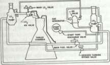
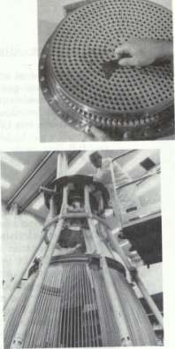
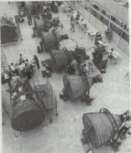
The f-2 liquid-hydrogen-fueled engine: statistics are presented at top left; at top right, the J-2's injector; above, left, a schematic of the J-2 engine systems; above, Rocketdyne workmen in a ''clean room" in the Canoga Park plant are stacking the coolant tubes that will form the wall of a J-2 engine thrust chamber; at left, final assembly of J-2 engines at Canoga Park—J-2s for both the Saturn IB and the Saturn V; below left engineers study a J-2 engine that has simulated frigid space conditions; below, right, a cluster of five J-2 engines are readied for firing at Santa Susanna.
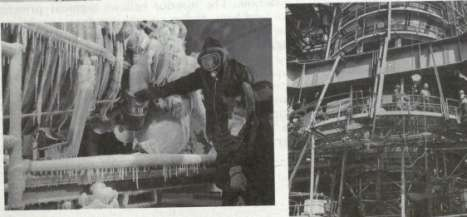
STAGES TO SATURN
Various areas of concern in the production of the engine, such as reorganizing the gas generator system sequence to refine the LOX flow and halt burned-out gas generator walls, cropped up along the way. A more serious problem concerned the tendency of the fuel pump to stall. After considerable investigation, researchers isolated the problem as one of excessive gas buildup in the thrust chamber. With the J-2's regenerative full flow mode, a substantial volume of hydrogen gas was created when 1 the first fuel passed through the comparatively warm chamber. The amount of this gas exceeded the rate of flow designed into the injector, and this impeded the rate of flow of fuel downstream in the system while the engine was starting. To solve the problem, the designers developed the prechill sequence for the chamber and pumps alike and established temperature condition limits for the engine before attempting a start. In these and other engine difficulties, Marshall and Rocketdyne applied all the latest analytical methods and computer programs. It still came down to the issue of making an adjustment, however, and then trying it out to see what happened. 45
Rocketdyne officials hoped to utilize existing engine facilities to test the J-2 engines and components. The unusual characteristics of liquid hydrogen engines generated an excess of problems in the test equipment— valves, transfer lines, and tanks designed for the earlier liquid oxygen technology. To use LH 2 at -253°C, the available equipment had to have its materials rechecked for insulation, sealing, and embrittlement with the new fuel. In 1961, Rocketdyne established a special cryogenic laboratory to devote its attention exclusively to LH 2 paraphernalia. The difficulties extended to numerous items of equipment such as the piping for the LH 2 test-run tanks. A typical test installation included three cryogenic tanks, one with a capacity of 307 000 liters (90 000 gallons) of LH 2 and two smaller tanks each holding 73 000 liters (20 000 gallons) of LOX. The LH 2 tank was a conventional pressure-vessel type, with the addition of a complete vacuum jacket of unusually large design. The liquid hydrogen transfer pipes at the test installation likewise required the vacuum jacket treatment. For years, engineers relied on a double-wall design in transfer pipes that used a bellows in the inside pipe to absorb expansion and contraction. The interior bellows segment presented difficult maintenance problems under normal cryogenic conditions— problems that became pernicious with the introduction of liquid hydrogen. Rocketdyne sought a new approach, and after rejecting a number of candidates, adopted a piping design based on the use of Invar, an alloy pipe with very low expansion characteristics. At the time, the use of Invar piping for such extensive cryogenic operations was the exception to the rule, and the company perforce had to engage in extensive evaluation programs. In its application by Rocketdyne, the use of Invar was "reduced to practice." Invar's virtually negligible thermal contraction permitted long inner pipe runs with no expansion mechanism at all
UNCONVENTIONAL CRYOGENICS: RL-10 AND J-2
(although the stainless steel outer jacket retained a bellows section for thermal movement). Rocketdyne installed 8-centimeter and 9-centimeter pipe sizes in runs of up to 370 meters and used some welded pipe of up to 25 centimeters in diameter. Technicians also perfected methods for reliable ship welding and field welds of Invar at the test sites. 46
SUMMARY: RL-10 AND J-2
The differences in thrust and mission requirements gave the RL-10 and J-2 distinctive variations in operating methods and specific details of design. In other ways, there were interesting similarities. In retrospect, the development of the RL-10 and J-2 engines progressed with remarkably few serious hassles. The liquid-hydrogen-fueled engines, just like RP-1-fueled engines, experienced a normal rash of complications and problem phases. It is worth noting that despite the F-l's size and attendant vicissitudes, Rocketdyne was fortunate in having the experience of its H-l engine development as a base. Although the liquid hydrogen engines were developed and built by two different contractors, the government managed both programs so that information from one program was available to subsequent programs. Lewis Research Center, NASA's facility in Cleveland, represented an interesting intermediary influence, providing a pool of knowledge about liquid hydrogen technology used by Pratt & Whitney and Rocketdyne alike. Just as early work at Lewis was a benefit to Pratt & Whitney's RL-10, Rocketdyne's later J-2 benefited from both Pratt & Whitney and Lewis.
It has been noted that engine development normally preceded development of the stages, and that the engine program often became the pacing item. The Saturn program generally reflected this trend, although at one point it was a stage, not an engine, that threatened to disrupt the tight schedule of Apollo-Saturn.
Building the Saturn V
It might seem logical to narrate the story of Saturn V's various stages from the bottom up, beginning with the S-IC stage. However, the stages were not built that way. The Saturn V third stage, the S-IVB, evolved first, based on upper stages of the Saturn I and Saturn IB. As the first large unitary Saturn tankage (not a cluster of individual tanks), a rather detailed discussion in chapter 7 of some of the procedures used in S-IV-IVB fabrication and manufacture eliminates repetitious discussion of similar procedures for other stages in succeeding chapters.
The S-IC and S-II stages, while sharing a common diameter, used different propellants. Although S-II contracts were let prior to those of the S-IC, the S-II became the pacing item in the Saturn program, completing its firing tests later than the other components. Chapter 8 explores S-IC and S-II commonalities and contrasts, emphasizing the imbroglio of the S-II program and its eventual recovery.
Computer technology played a consistent role in the evolution of the Saturn vehicles. Chapter 9 surveys computer activity from manufacturing, through stage test, to launch. In flight, the computers of the instrument unit guided and controlled the Saturn V, including the fiery separation of Saturn V stages during their journey into space.
From the S-IV to the S-IVB
The upper stage of both the Saturn IB and Saturn V evolved from the upper stage of the Saturn I. All three upper stages were manufactured by Douglas Aircraft Company, used liquid hydrogen and liquid oxygen as propellants, and shared the same basic design concepts and manufacturing techniques. The Saturn I upper stage (the S-IV) used a cluster of six engines, but the Saturn IB and Saturn V upper stages (designated the S-IVB for both versions) possessed a larger diameter and mounted a single engine of different design. During one early period of Saturn planning (about 1958—1959), the S-IV was planned as the fourth stage of a vehicle known as the C-4, but the changes and deletions involving the original "C" series left the S-IV in a different role. 1 Instead of entering service as a fourth stage, the S-IV became the second stage of the Saturn I. During late 1959 and early 1960, NASA began plans to name a major contractor for the S-IV stage.
Because the S-IV was the first major Saturn stage hardware to be built under contract, NASA proceeded very carefully. The situation was even more delicate because Wernher von Braun and the Army Ballistic Missile Agency (ABMA) team had not yet been officially transferred from the Army into NASA, although the ABMA group was to be deeply involved in the contractor selection process for the Saturn upper stage.* NASA Headquarters assiduously followed the negotiations.
* Although NASA assumed technical direction of the Saturn program on 18 Nov. 1958, administrative direction was not completely transferred by the Department of Defense until 16 Mar. 1960. On 1 July 1960, the von Braun team was formally transferred to NASA and MSFC began official operations.
STAGES TO SATURN
CONTRACTS FOR THE S-IV
At Huntsville, Alabama, on 6 January 1960, Abraham Hyatt, Deputy Director of Launch Vehicle Programs at NASA Headquarters, met with von Braun, Eberhard Rees (von Braun's technical adviser), and ABMA staff to ensure that S-IV contract procedures met NASA expectations. Hyatt got the ABMA team to loosen up a little on strict constraints that would limit the number of potential applicants; it was agreed that at least 20 companies would get specific invitations to submit proposals. Any other company could request to participate, although Hyatt felt that "most companies will realize that this is a 'big league' competition and I doubt that there will be any companies aside from those selected who would seriously consider submitting a full scale proposal."
During the all-day session at Huntsville, ABMA agreed to set up a technical evaluation team and a business evaluation team to analyze proposals from the various contractors. A source selection board, staffed by ABMA and NASA Headquarters representatives, would then review the findings of the evaluation teams and make a final recommendation to the Administrator. A calendar called for a bidders conference at Huntsville, 26—27 January, contractor proposals submitted 29 February, and source selection board recommendations by 1 April. ABMA was also directed to submit second-stage specifications, a funding plan, and a management plan to Headquarters.
By the time of the bidders' conference, not all the S-IV specifications had been established. Rather than delay the conference, NASA and ABMA agreed to have bidders submit proposals for a stage to load 54 500 kilograms. Within a month, ABMA promised to determine the precise loading and use this figure in negotiating final details with the winning contractor. Von Braun explained this situation to the first session of the bidders' conference on 26 January. The prospective contractors got an extensive briefing from top NASA and ABMA managers and received a bulky packet of materials to use as guidelines in submitting proposals. The next day was spent answering questions. Following that, the prospective contractors had one month to prepare their detailed proposals; NASA and ABMA had the following month to evalutate them. 3 After considering the scope of the project and the guidelines laid down by ABMA, only 11 contractors submitted proposals. 4
The source selection board made its presentation to NASA Administrator T. Keith Glennan on 19 April 1960. By 26 May, Glennan had reviewed all the relevant materials, and NASA announced that Douglas Aircraft Company had been selected for further discussions leading to a
FROM THE S-IV TO THE S-IVB
final contract for the S-IV stage. 5 Douglas* and Convair had been the leading contenders, and Glennan finally based his decision on certain subjective factors. The findings of the Source Selection Board tended to give Convair a slight edge in technical competence, although Glennan remarked that "the Douglas proposal, in some ways, seemed more imaginative." Convair, however, scored lower in the business and management areas. No matter who was chosen, Glennan said, minor shortcomings in either the business or the technical areas could be easily corrected. Other reasons, therefore, favored Douglas.
Glennan pointed out that Convair would have a continuing business in liquid hydrogen rockets because of its own Centaur program. Moreover, the Centaur was ticketed for use in proposed Saturn vehicles as an upper stage called the S-V. Glennan apparently had a strong reservation about giving Convair the S-IV stage as well, because "a monopolistic position in this field seems possible." In short, Glennan chose Douglas because "broadening the industrial base in hydrogen technology is in the best national interest." 6
The choice of Douglas, and the reasons for that choice, stirred a minor controversy. On 12 May, the Committee on Science and Astronautics, House of Representatives, asked the General Accounting Office to investigate NASA's selection of Douglas. The report of the General Accounting Office, dated 22 June 1960, generally sustained Glennan's statements on the matter and noted that his decision "was consistent with the written presentation of the Source Selection Board and other related documents." The report also supported the NASA position on problems concerning logistics and other questions. 7
During May and June, NASA, Huntsville, and Douglas went ahead with the negotiations that preceded the signing of a final contract. Meeting two or three times a week on the West Coast, conferees hammered out details of costs for planning, tooling, engineering, testing, and manufacturing. A second group worked out details of technical design and engineering and set up continuing working panels that included both government and contractor counterparts. This combination of close collaboration and monitoring by NASA set the pattern for future relationships with Douglas, as well as other stage contractors. 8 (For details of NASA-contractor relationships, see chapter 9.) During the succeeding months, decisions on engines, configurations, and missions influenced the evolution of the S-IV and led to two versions of its successor, the S-IVB.
*In 1967, Douglas Aircraft Co. and the McDonnell Corp. merged, becoming the McDonnell Douglas Corp., with headquarters in St. Louis, Mo. The former Douglas division in California, responsible for the S-IV and S-IVB, became McDonnell Douglas Astronautics Co. (MDAC). For convenience, the term Douglas is used in the narrative.
STAGES TO SATURN
NUMBERS AND NOMENCLATURE: S-IV AND S-IVB
In August 1960, NASA announced that the S-IV would use a cluster of four Pratt & Whitney rocket engines. 9 When the development of the Pratt & Whitney LR-119 engines ran into snags, MSFC officials began to lean more and more to the idea of using six less powerful versions. Moreover, the cluster of six engines opened the possibilities of raising the payload capability and promised better inflight control. Finally, the RL-10 type was adopted (see chapter 4). By May 1961, Pratt & Whitney had put together final mockup of the RL-10 and shipped copies to both Douglas and Convair for installation and interface compatibility checks.
On 25 January 1962, NASA Headquarters confirmed the role of MSFC as the lead center to proceed with the two-stage C-l and to design and develop a three-stage vehicle, the C-5. Mission planners envisioned a series of development flights, testing each stage in successive combinations before a full-dress flight test of the three-stage C-5 vehicles. Eventually, the C-5 would be topped off by an improved S-IV, known as the S-IVB. For this stage, a single J-2 engine would provide the thrust to escape Earth orbit and boost a 44-metric ton payload to the vicinity of the moon. 10 Under this scheme, the S-IVB would have been the last stage to be flight-tested and the "junior member" of the Saturn C-5 vehicle when the big rocket finally lifted off as a complete stack. The reverse happened. The single-engine S-IVB became the real veteran of the Saturn program, active in more launches than any other stage. This was because it became part of an interim Saturn vehicle, between the C-l and the C-5. 11 The new Saturn class vehicle, designated C-1B, relied on a uprated version of the original C-l first stage but included the S-IVB as the second stage.
NASA acquired the S-IVB under a sole-source procurement contract with the Douglas Aircraft Company. Plans for this variation of the S-IV stage began with an ad hoc working group established at MSFC in August 1961, and NASA Headquarters approved Douglas as the sole-source contractor in December. The space agency seemed somewhat sensitive about the S-IVB contract, because there had been no bidders' conference or active competition by other firms. NASA awarded the contract to Douglas for reasons of cost and schedules: "The similarity of the S-IVB and S-IV stages permits the exploitation of both facilities and technical skills of the contractor now developing the S-IV stage, resulting in substantial savings in both time and money to NASA." In a memo to Associate Administrator Robert Seamans, D. Brainerd Holmes stressed the similarities in configurations which permitted use of the same tooling and materials, as well as facilities for checkout, static testing, and captive firing. 12
Mission planners at NASA saw a means to accelerate the Apollo program by using the high-energy S-IVB stage of the C-1B to launch manned, Earth-orbital missions with a full-scale Apollo spacecraft. The
FROM THE S-IV TO THE S-IVB
new vehicle, launched with the instrument unit (IU) segment used on the C-l, also provided opportunities to refine the maneuvers for the lunar missions. The NASA announcement of the C-1B on 11 July 1962 included word that lunar orbit rendezvous (LOR) was the technique chosen for the manned lunar landing missions with the Saturn C-5 launch vehicle. The S-IVB, with its capability for heavier payloads and reignition for translunar injection, was an important element of the LOR scheme. The C-1B offered a fruitful method to try out the critical transposition maneuver, docking of the command and service modules (CSM) and the lunar module (LM), and the translunar sequence of the S-IVB upper stage. During the summer of 1962, Douglas complied with MSFC directives to make the comparatively uncomplicated modifications of the S-IVB to fly on the C-1B vehicle. Early in February 1963, the "C" designation was dropped once and for all. The three Saturns now became the Saturn I, Saturn IB, and Saturn V. 13
MISSION PROFILE AND DESIGN
Nearly all of the LOX-kerosene boosters in use when the Saturn program began reflected a direct linage from the ballistic missiles of the 1950s. Although the Thor performed yeoman service for unmanned satellites and probes, and the Atlas and Titan operated successfully through the Mercury and Gemini programs, these boosters had not been designed for such missions. Nor were they capable of orbiting the manned payloads expected in the Saturn program. For these reasons, a unique, staged, large payload-oriented launch vehicle was indicated.
Cutaway drawings compare the S-IV stages on Saturn I, IB, and V.
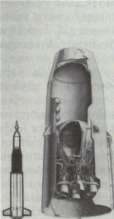
S-IV SATURN-I SECOND STAGE
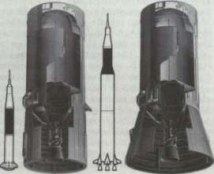
S-IVB SATURN-IB SECOND STAGE
S-IVB SATURN-V THIRD STAGE
STAGES TO SATURN
The upper stages of such a vehicle were critical to the eventual success of the mission—especially the top stage, which inserted the payload into the final, stabilized orbit. Douglas engineers were emphatic. "The overall performance of the end-stage has greater influence than the primary stages. The Saturn V launch vehicle for the lunar mission requires 50 pounds [23 kilograms] of booster weight at liftoff for each pound of payload injected into a translunar trajectory," they explained. "Without high-energy upper stages this factor would be significantly greater." 14 The key to these high-energy stages was liquid hydrogen as the fuel. An engineer from Douglas, the eventual contractor of the S-IV and the S-IVB, summed up the significance of the decision to use liquid hydrogen. "The combination of hydrogen and oxygen for propellants made the moon shot feasible," he declared. "Its use in upper stages results in a significant increase in performance over the propellant combinations of oxygen and kerosene then in use in first-stage boost-
ers." 15
Many aspects of the S-IV design were transferred directly to the S-IVB, even though it mounted only one engine, instead of a cluster of six. The configurations of both upper stages depended on the mission requirement, and ultimately, on the location of the stages in the various Saturn vehicles. Originally, Douglas planned a 5.6-meter-diameter stage for the S-IVB, designed for Earth orbit rendezvous (EOR), requiring a coast in low Earth orbit for as long as 30 days. This permitted time for subsequent launches of other Saturn and Apollo hardware, rendezvous, and preparation for injection into lunar transfer orbit. As the mission profile changed from EOR to LOR, the S-IVB design requirements shifted to a four-day coast period, although the final mission profile called for a four-and-a-half hour coast in low Earth orbit, followed by a translunar injection burn and a two-hour period in translunar coast. Throughout this time of design discussions with MSFC, the proposed stage diameter remained at 5.6 meters, with an interstage to adapt to the 10-meter diameter of the S-II stage of the preliminary C-5 design. Shortly before NASA's final contract definition of the Saturn V version, Douglas received a design change notice to go from a 5.6-meter version to a 6.6-meter tank. The reason for the change related to the mission of the interim Saturn IB, and the increased diameter allowed added payload capability for launching and testing Apollo components in Earth orbit.
The increased S-IVB capability was also compatible with its ultimate role in Saturn V as envisioned at MSFC. By 1964, the details were fairly well defined and the program manager for the S-IVB, Roy Godfrey, outlined them at a NASA conference in Houston. Briefly, the Saturn V was to place a spacecraft into a translunar trajectory, enable a soft landing on the moon with a manned payload, and return to Earth. In the mission, the S-IVB had two critical responsibilities: get the Apollo craft into orbit, then restart and insert the payload into the translunar trajectory. The
FROM THE S-IV TO THE S-IVB
orbital phase left the S-IVB, instrument unit, and Apollo spacecraft in an Earth orbit of 185 kilometers, where it remained for about four and a half hours, or time for three orbits of the Earth. Following the powered flight, which consumed about half of the propellant, the stage relied on its auxiliary propulsion system during the orbital coast, to ensure proper attitude control and "ullage orientation" of the remaining propellants toward the bottom of the tank prior to engine restart—"ullage" being an old brewmaster's term that referred to the volume of air above a partially full container. After restart, the second burn put the S-IVB and Apollo spacecraft into the translunar trajectory and consumed the remainder of the propellant. With burnout of the S-IVB verified, the transposition maneuver was carried out—a nose-to-nose rendezvous of LM and GSM. Concluding this maneuver, the spent S-IVB and instrument unit were separated from the LM-CSM by retrofire ordnance aboard the S-IVB, and the mission of the Saturn V third stage was over. 16
The nature of the S-IVB mission imposed special requirements on its design. For one thing, the engine and stage needed the capability to restart in orbit. The stage had to have special equipment to ensure storage of propellants and proper orientation while in Earth orbit for four to five hours. The advantages obtained from the mission profile, primarily the coasting orbit and the 185-kilometer altitude outweighed the penalties. At the same NASA conference in Houston in 1964, the head of the Aero-Astrodynamics Laboratory at MSFC, E. D. Geissler, explained the tradeoffs in choosing this particular mission profile.
A "one shot" launch to the moon, as opposed to the LOR mode, had the advantage of permitting a somewhat larger payload. The Earth-orbital sequence carried with it a weight penalty of some 1360 kilograms to supply the S-IVB, IU, LM, and CSM systems with longevity and life support for the extra four to five hours. On the other hand, the "one-shot" launch had to be precisely plotted for liftoff at a fleeting instant of time within a given month. Injection in a direct lunar trajectory could take place only at a time when the Earth and the moon were so aligned that the liftoff point was precisely opposite the moon. The LOR sequence, incorporating a period of coasting, made liftoff much less time-critical. The time of departure from Earth orbit was also less critical, since the "launch window" in Earth orbit lasted about four hours and recurred twice daily. Moreover, the extra time in Earth orbit permitted more accurate tracking of the vehicle and allowed the mission controllers to plot a far more accurate start of the "burn" for insertion into the lunar transit trajectory. The Earth-orbital coast path of 185 kilometers represented some compromises. Although higher orbits would have reduced aerodynamic heating, the orbit chosen allowed better tracking and telemetry. 17
Other considerations affecting the design of the S-IVB and its predecessor, the S-IV, involved the propellants. The physical characteris-
STAGES TO SATURN
tics of liquid hydrogen altered the apparent logic of tank location. The weight of the propellants included 87 200 kilograms of LOX and 18 000 kilograms of LH 2 (with some variations, depending on mission requirements). Logically, the layman might assume that the smaller LH 2 tank should be placed on top of the LOX tank, as was done with the RP-1 fuel and LOX in the S-IC first stage. The volume of the lighter LH 2 was much greater, however, requiring a larger vessel to hold 252 750 liters (69 500 gallons), as compared with only 73 280 liters (20 150 gallons) of LOX. If designers placed the LH 2 tank in the aft position, with the LOX tank above, LOX feed lines would be longer and would have to be run through the interior of the LH 2 tank (with additional problems of insulating the LOX lines from the colder liquid hydrogen). Longer LOX lines would have to be mounted externally between the LOX tank and the engines. Either solution carried a high weight penalty for long lines and associated hardware. It made more sense to put the fuel tank containing the LH 2 in the forward location, making it easier to route the LH 2 feed lines internally around the smaller and more compact oxidizer tank. 18
One further difference characterized the S-IV and S-IVB in comparison to the only other significant rocket stage that burned liquid hydrogen, the Centaur. The Centaur, like the Atlas, relied on internal pressure for rigidity and stiffness of the tank walls. With no pressure, the Centaur would buckle and collapse. The Saturn S-IV and S-IVB, like other stages, evolved as self-supporting structures that gave added confidence in the man-rating requirements. Furthermore, the various stresses placed on the oversized stages during erection and transportation to the launch pad, as well as the time-consuming checkout and countdown, were more tolerable. 19 The S-IV and S-IVB structures owed much to an earlier Douglas rocket, the Thor.
Although the S-IV relied on six RL-10 liquid hydrogen engines and the S-IVB mounted only one J-2, the choice of propellants remained the same. The S-IVB carried more propellant for a longer time, and the mission of the Saturn V, calling for restart in orbit, imposed some new design requirements. Stage interfaces in different Saturn vehicles required different skirt and interstage designs. 20 The stages, however, were essentially the same. The delivery of the first S-IVB flight stage to NASA in 1965 was the culmination of a single thread of the story of the design, fabrication, and manufacture of the S-IV and S-IVB liquid hydrogen upper stages.
The transfer of Thor experience to the more advanced S-IV and S-IVB began with the tank skins and carried into many related fabrica-
FROM THE S-IV TO THE S-IVB
tion and production techniques, including metal removal by machining and by chemical milling, forming by stretching and bending, welding, chemical bonding, and mechanical fastening.
When the Thor project entered the phase of design studies in the mid-1950s, engineers screened a number of metallurgical candidates for the rocket's propellant tanks. With its heritage of advanced aircraft design and production, Douglas had considerable expertise in handling various aluminum alloys. These metals and other nominees were therefore subjected to extensive test and analysis for use as cryogenic tankage. Adaptability for fabrication and inspection requirements for quality assurance were included in the tests. The Thor tanks not only had to be amenable to cryogenics with the liquid oxygen, but the tanks also had to be weldable. Welded joints promised the only sure way to control leaks of the cryogenic fuels—cryogenic leaks had a high potential of explosion. As it turned out, the 2014 alloy selected for the Thor worked so well that Douglas chose it for the S-IV and continued its use on the S-IVB. 21
During the Thor design program, engineers considered several fabrication methods for the tanks, including conventional skin and stringer designs, as well as a monocoque style derived from aircraft construction. Both were rejected because of drawbacks of weight and construction requirements. With a design goal for very thin but rigid walls, Douglas finally settled on an integrally stiffened shell structure, using special equipment to literally "carve out" ribs from the inside walls of the tank. The wafflelike pattern that resulted was both practical and efficient. The waffle recesses were about 7.5 centimeters square, bounded by ribs that increased the buckling strength of the tank walls.
The S-IV and S-IVB featured the same waffle-shaped integral stiffening for their liquid hydrogen tanks, although designers increased the waffle size, and the S-IV skins were milled from 1.3-centimeter plates, as compared with 1.9-centimeter plates used for the S-IVB. To produce the seven separate segments for the S-IVB liquid hydrogen tank, Douglas used a Giddings and Lewis mill with a 3.6 x 12.2-meter bed and two router heads. Depending on particular requirements for some of the more complex areas and special sections for the later attachment of accessories, machining for each segment consumed 106 to 134 hours. In the waffle-machined form, the tank segments were formed to the proper curvature. To prevent the waffle ribs from buckling, Douglas personnel inserted reusable polyethylene blocks, then ran each segment through a Verson press for progressive forming. The Verson power brake, originally used in the production of various panels for the DC-8 jet aircraft, was unique in size for its time. Rated at 25 300 000 grams per square centimeter (3 600 000 pounds per square inch), it could handle sheet stock up to 1.9 centimeters thick and 13.4 meters long and form the sheets to specification with an automatic program for feed and contour. 22
STAGES TO SATURN
The components for the S-IVB originated from several California locations. The liquid hydrogen tank segments were formed on the Verson press at Long Beach. The preliminary milling took place at the Douglas facility in Santa Monica, which also fabricated and assembled all propellant tank domes and bulkheads, and completed the subassembly of the liquid oxygen tank. Final manufacturing of S-IVB stages took place in the new Douglas complex at Huntington Beach, begun in January 1963 specifically for S-IVB production. The Huntington Beach facility featured a distinctive architectural detail—external bracing on the production and assembly buildings—that enhanced cleanliness on the inside because there were no interior beams, supports, or braces to gather dust and dirt that might contaminate components during final assembly. Douglas funded the construction of the Huntington Beach facility out of its own capital reserves, and made it one of the most advanced aerospace plants of its kind in the United States. As for the other major stage contractors, Boeing operated out of the converted Michoud facility owned by the government, and North American used a mixed facility at Seal Beach. Executive and administrative offices owned by North American Rockwell were across the street from assembly and checkout areas that were leased from NASA. 23
DOMES AND BULKHEADS
The designers of the domes for the S-IV and S-IVB settled on a true hemispherical shape. This design meant the domes were deeper and increased the overall weight of the stage (in contrast to the elliptical domes of the S-II stage). Douglas accepted this penalty in exchange for the extra strength inherent in the design, the possibility of a smaller diameter for the stage, and the resulting simplicity in tooling. The domes were composed of nine triangular segments, or gores, that were stretch-formed over special dies to accurate contours. With multiple contours, the requirements for partial waffle structuring of the gore segments could not be met by the mechanical milling. Instead, Douglas used chemical milling for this task, with masked segments dunked in large vats of chemicals for carefully calculated periods of time to remove certain areas of the aft LOX dome to a specified depth. Workers next moved the separate gore segments to a special meridian welding jig for the automatic welding sequence (under a plastic tent for cleanliness) that joined together the various segments of the aft and forward domes.
Technicians at Santa Monica performed the demanding job of welding the segments of the common bulkhead and propellant tank domes. The triangular segments, which look like pieces of orange peel, were placed into a welding jig for what appeared to be a very simple operation. Not so. "We cut our eye teeth on this phase of manufactur-
FROM THE S-IV TO THE S-IVB
ing," recalled H. E. Bauer, a company executive who was deeply involved in the S-IV and IVB project. To join the metal "peels" together to form a hemispheric half-shell, Douglas used a rotating fixture and a "down hand" technique of welding. In this mode, the weld torch moved on a track while the molten welding "puddle" remained in the proper position from force of gravity, which also minimized undesirable porosity. While welding the orange peel segments, a strange problem developed. The tracking system for the weld torch hinged on the detection of discontinuities produced by induced eddy currents along the seams to be welded. The exasperating torch heads wandered all over the place, however, apparently unable to follow the seams at all. Oddly enough, the trouble was traced to manufacturing standards being set too high! "Because the individual segments had been so carefully formed and sized," Bauer explained, "upon butting them together no sensible level of electrical discontinuity to the instrument developed." Some insensitive soul suggested the application of a bastard file to rough up the seams and create enough discontinuity that the tracking system could do its job. After adamant protests from the manufacturing people at Long Beach, Douglas specialists refined the tracking system to give it a much higher gain, and scarfed (grooved) the segments to provide a path for the tracking sensors to follow. 24
Like Centaur, the S-IV and S-IVB relied on a common bulkhead to separate the fuel from the oxidizer. In more conventional designs, the propellants were housed in separate tanks, each with its own forward and aft domes and tank walls. This required an intertank assembly to join the tanks rigidly together as a complete vehicle, making for greater length and greater weight. The common bulkhead, in the case of the Douglas upper stages, meant a reduction in structural weight of up to 20 percent. Douglas developed a double-faced hemispherical structure, about five centimeters thick, with a pair of 2014-T6 aluminum shells on either side of a fiberglass honeycomb core. The bulkhead separated LH 2 at — 253°C (-423°F) on one side from LOX at - 172°C (-297°F) on the other side. The common bulkhead served as an end dome for both LH 2 and LOX tanks, as well as insulation to prevent heat flow from the LOX to the colder LH 2 . Otherwise, the liquid oxygen would freeze solid. The bulkhead was designed to take the thermal stresses and reverse pressures, as well as to survive a major loss of pressure from either side. Douglas designer and engineer Ted Smith emphasized that the design of the common bulkhead originated with Douglas, independent from MSFC. Originally conceived for the S-IV, the bulkhead was adapted to the second-generation S-IVB with only minor changes for larger diameter and attachment. 2n
The curved, concave aluminum shells were quite thin: 0.813 millimeters for the forward sheet and 1.4 millimeters for the aft sheet, with a 6.63-meter diameter for the S-IVB. Working with such large
STAGES TO SATURN
diameter, thin-skinned sheets required exacting procedures. The complete aft dome sheet was set up on a bonding fixture to which the honeycomb was bonded. The forward dome sheet was moved into position over the fixture and bonded into place atop the honeycomb filler, completing the three-layer "sandwich" construction. This construction was, at least, the ideal the engineers hoped for. In practice, the milling and bonding of the forward dome sheet created a serious problem. The sheet's contours differed from the honeycomb layer underneath, and the aluminum skin developed an exasperatingly uneven terrain of gaps, gullies, and wrinkles. 26 Douglas finally contrived a method of measuring the valleys and hills between the honeycomb and the forward sheet, then sculpting the honeycomb's contours for an acceptable fit. The technique was known as the "Paleno block system," involving a meticulous, tedious process done almost entirely by hand.
The procedure began with the top of the aft dome exposed before the honeycomb insulation was affixed and bonded. Workers then set up 350 small honeycomb blocks over the entire surface. Each block carried a pad of putty, encased in cellophane, on its top. With the putty-pad Paleno blocks in place, the forward dome sheet was lowered to approximate its final installation, making contact with each of the putty pads. The dome was hoisted up and workers measured the indentation on each pad to plot the variations in the aft dome's contours. Next the blocks were removed and the production honeycomb sections were fitted and bonded to the aft dome sheet. With templates in place to indicate the positions of the Paleno blocks, the honeycomb surface was "spot faced" to the Paleno measurements, which provided reference points for the next operation: sanding the entire surface by hand to the desired contours for a custom fit. In a wry understatement, engineers from Douglas and MSFC agreed: "This hand-sanding operation is time-consuming and subject to some human error." After cleaning, workers spread adhesive over the surface, and the entire common bulkhead unit went through the final bonding cycle at 182°C (360°F) inside an oversized autoclave. Finally, the unit was machined to the required tolerances on a Niles boring mill, which also machined the circumferential attach rings to mate the common bulkhead to the aft liquid oxygen dome. 27
PUTTING TOGETHER THE PIECES
For the aluminum structural assemblies of the S-IVB, Douglas relied on conventional designs, fabrication, and manufacturing developed from its experience as an airframe manufacturer. Details of the assemblies for the forward skirt, aft skirt, interstage, and thrust structure were produced by numerically controlled equipment, with panels riveted together in automatic machines. The forward and aft skirts included fittings to
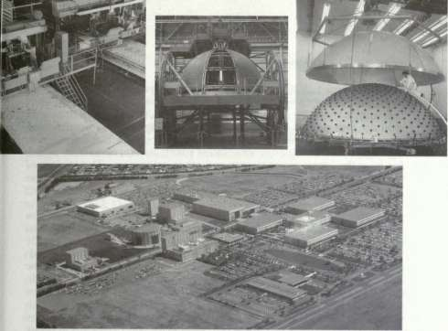

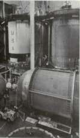
Top left, S-IVB tank skins, the basic structural walls of this rocket stage, are milled on the inside in a wafflelike pattern to reduce weight while retaining most of the structural strength. Top center, the dome of the tank is being fitted with gores before welding. Top right, the two dome sections of the S-IVB's common bulkhead are being precisely fitted before insulation is applied between them. Above, the Douglas Airplane Co. facility at Huntington Beach, California, is fabricating and assembling the S-IVB stages. At left are major structural components of the S-IVB; at upper left is a complete hydrogen-oxygen tank; in the right foreground a straight-sided Saturn IB interstage is flanked by a pair of aft skirts, with a forward skirt to the rear. Below, left, shows production in full swing: in towers at right and center, stages are being checked before shipment to Sacramento for firing tests; in the left tower, a tank section is being cleaned before insulation is applied; in lower right, a tank is being given its final interior work and the completed tank at left is about to be hoisted into the tower from which the photos were taken. Below, right, the intricate job of applying insulation to the interior of the liquid hydrogen tank proceeds, as another individually numbered insulation tile comes off the conveyor belt.
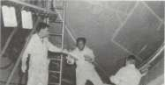
STAGES TO SATURN
support assorted electrical and mechanical subsystems and vents, as well as propellant lines and umbilical connections required for operations at the launch site. The aft skirt carried the auxiliary propulsion system modules and the aft interstage contained fittings for the retrorockets. The thrust structure featured skin and stringer construction for strength and rigidity. It contained several access panels and carried attach angles for miscellaneous engine fittings and other equipment. The bottom of the thrust structure carried the fitting for the engine mount and was machined on a numerically controlled vertical turret lathe and a five-axis milling machine.
Inside the labyrinth of the Vehicle Tower Complex at Huntington Beach, the fabricated components of the S-IVB finally reached the nexus of their journey, and emerged as a complete rocket stage. The Vehicle Tower Complex reminded the observer of the Vehicle Assembly Building at Cape Kennedy. Although smaller in size, the complex had the same immensity of scale. It was a single building, 36 meters high, enclosing a total of 2230 square meters. The interior had provisions for six large bays, each capable of holding a complete S-IVB vehicle, with two overhead cranes (10.1 and 20.2 metric tons) to swing the stages to the required station. Basically, the bays were internal compartments to house a series of assembly towers, with movable work platforms at various levels in each. The complex included a pair of assembly and welding towers, a tower for hydrostatic testing, another for cleaning and degreasing, and a final pair of checkout towers. To control and monitor the activities of each tower, an elaborate vehicle checkout control room adjoined the complex.